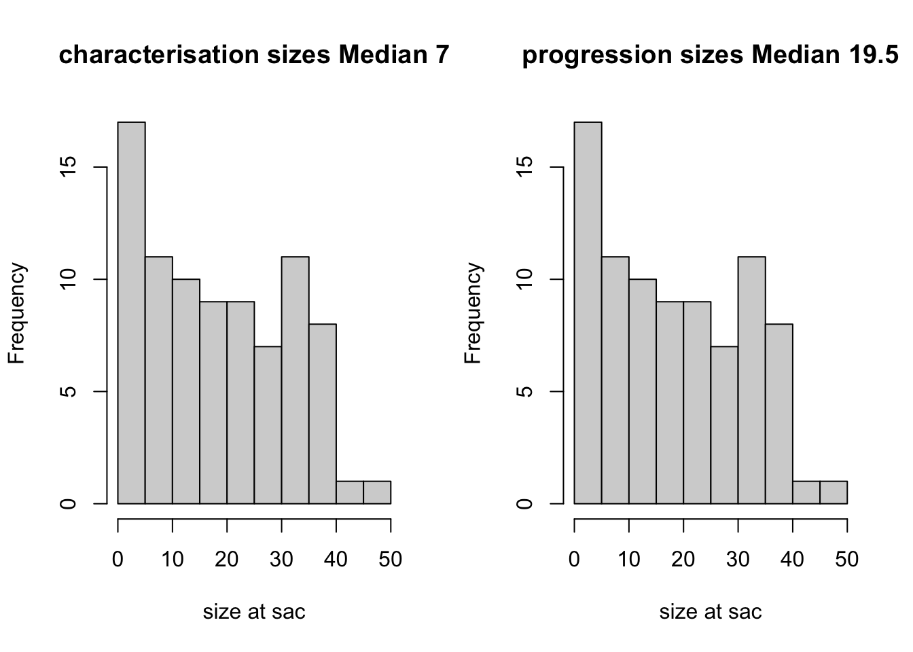
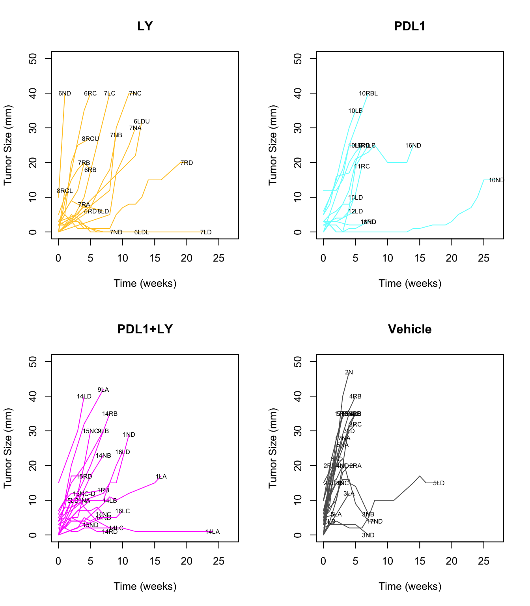
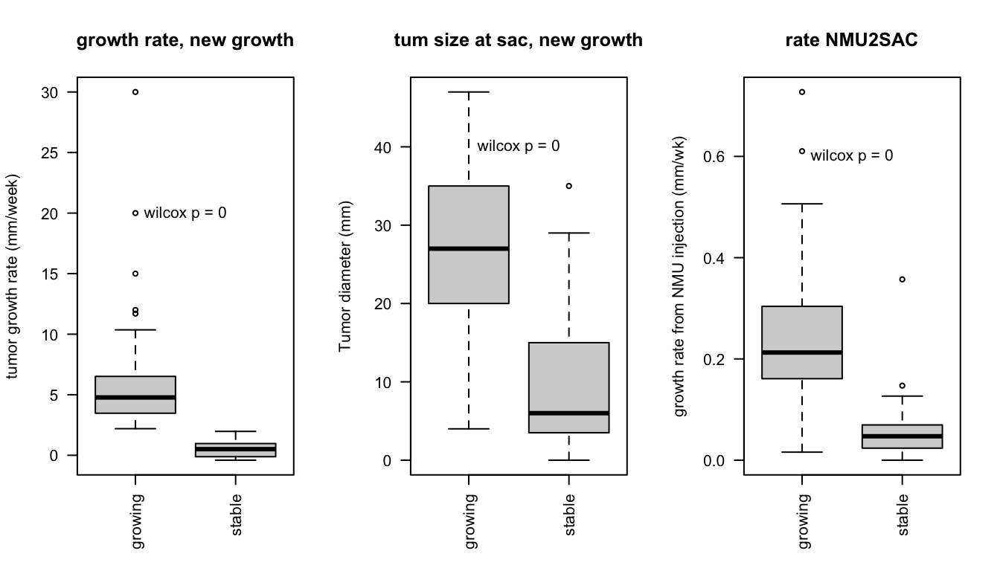
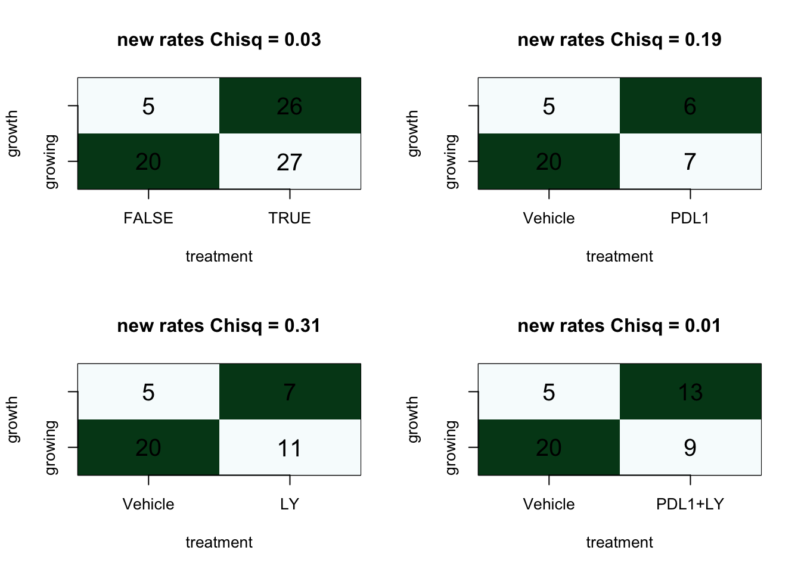
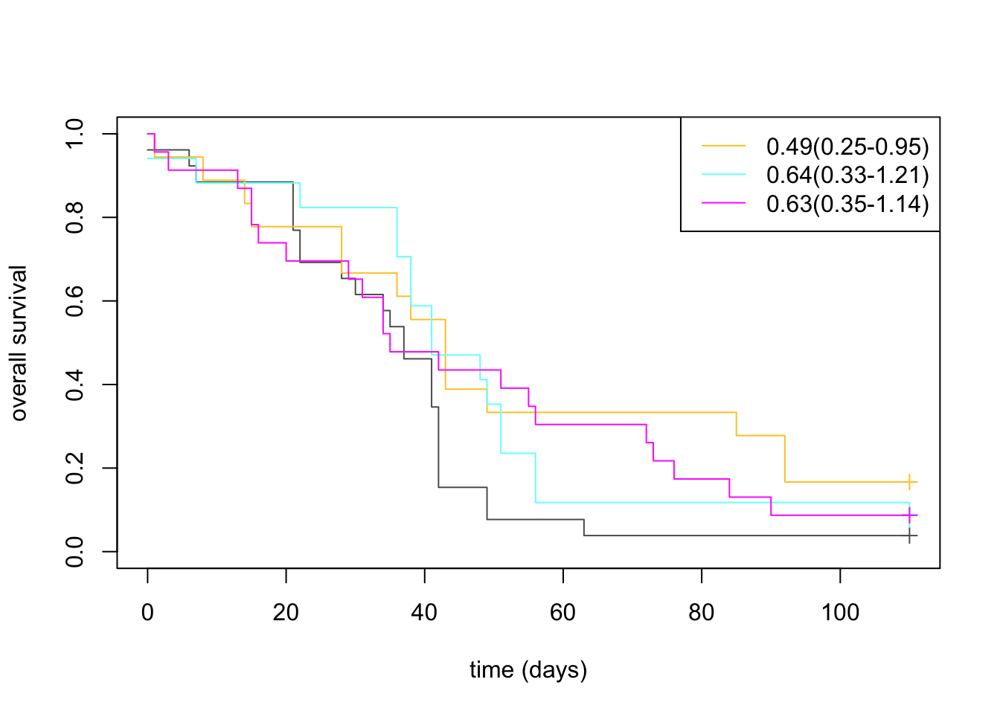

Chapter 2 Cohort summary
Below we assess summary statistics on clinico-pathological features of this data set. This includes information on:
- treatment
- tumor size
- growth rates (mm/week)
- number of tumors per rat
Cdata=xlsx::read.xlsx("../metadata/Extended Data Table1.xlsx", sheetIndex=1)
scroll_box(kable(Cdata, format="html"),
height="300px", width="100%")| NewID | TumorID | Rat_ID | Location | Cohort | Char.Cohort.Batch | Treatment | Age.at.injection.days. | Date.of.NMU.injection | Date.when.tumor.was.first.palpated | Date.Sacrificed | Tumor.growth.status | Time.NMU2Tumor.days | Time.Tumor2Sac.days | Time.NMU2Sac.days | Tumor.diameter.sac.mm | Tumor.Growth | Tumor.Histology | CD45.Frac.FACS | DN.Frac.FACS | EpCAM.Frac.FACS | PgR.IF | ER.IF | Nick.s.calls.Basal.Lumil | Sequencing.Batch | WGS | CD45.R | EpCAM.R | DN.R | R.seqSampleID | FqFile.CD45 | TRUSTme.CD45 | AnyRdata | starSampleme.CD45 | FqFile.Ep | TRUSTme.Ep | starSampleme.Ep | FqFile.DN | TRUSTme.DN | starSampleme.DN | Fil.HR.call | WSI.Image.me | Image.converted.for.qupath | Matrix.available | Comments.about.matrix | Pathologist.CD8.Spatial.Notes | Pathologist.CD8.Spatial | GrowthRate | WSI.CD8Fraction | WSI.EpCAMFraction | WSI.DPFraction | WSI.SMAFraction | WSI.UnclassFraction | knnEpDist | IFEpcam | MHEpcam | TumorAreaWSI | HR_status | Trichrome | Trichrome_encapsulation. |
|---|---|---|---|---|---|---|---|---|---|---|---|---|---|---|---|---|---|---|---|---|---|---|---|---|---|---|---|---|---|---|---|---|---|---|---|---|---|---|---|---|---|---|---|---|---|---|---|---|---|---|---|---|---|---|---|---|---|---|---|
| P24T1 | 10L_B | 10L | B | Progression | NA | PDL1 | 32-36 | 2018-02-14 | 2018-03-29 | 2018-05-04 | growing | 43 | 36 | 79 | 35.0 | growing | well differentiated mammary solid adenocarcinoma | 15.2 | 75.7 | 8.59 | Not done | Not done | NA | 2 | No | No | No | Yes | 10L_B_DN | NA | NA | yes | NA | NA | NA | NA | 20190213_47_CGDA6432-3of3_S1_R1_001.fastq.gz | 20190213_47_CGDA6432-3of3_S1_R1_001_report.tsv | DN_10L_B | NA | 10L PT B 5 HPC18-0971.mrxs | 4channel_23samples | YES | NA | Tumor infiltrating | Infiltrating | 6.2285714 | 0.0228977 | 0.2663149 | 0.1200304 | 0.3936498 | 0.1971072 | 47.98343 | 0.0398611 | 0.4984859 | 133918582 | NA | 0.1266438 | 0.75 |
| P24T2 | 10L_C | 10L | C | Progression | NA | PDL1 | 32-36 | 2018-02-14 | 2018-04-12 | 2018-05-04 | growing | 57 | 22 | 79 | 25.0 | growing | well differentiated mammary solid adenocarcinoma | 51.4 | 35.6 | 12 | Not done | Not done | NA | 3 | No | No | No | No | 10L_C_CD45 | 20191030_CD45_10LC_CGDA7427_S25_R1_001.fastq.gz | 20191030_CD4510LC_report.tsv | yes | CD45_10LC | NA | NA | NA | 20191030_DN_10LC_CGDA7428_S8_R1_001.fastq.gz | NA | DN_10LC | NA | 10L PT C-R+P.mrxs | pyramid | Yes | Suspicious about SMA-EpCAM switch. Underestimation of whats labeled as “EpCAM” | Tumor infiltrating | Infiltrating | 5.3571429 | 0.0100341 | 0.2960411 | 0.1672355 | 0.3081967 | 0.2184926 | 35.79494 | 0.0729492 | 0.5219795 | 136600748 | NA | 0.1500257 | 0.5 |
| P24T3 | 10L_D | 10L | D | Progression | NA | PDL1 | 32-36 | 2018-02-14 | 2018-03-29 | 2018-05-04 | stable | 43 | 36 | 79 | 10.0 | stable | well differentiated mammary solid adenocarcinoma | 49.8 | 39 | 13.5 | Mod | Neg | B | 2 | No | yes | yes | No | 10L_D_CD45 | 20190213_25_CGDA6432-2of3_S1_R1_001.fastq.gz | 20190213_25_CGDA6432-2of3_S1_R1_001_report.tsv | yes | CD45_10L_D | 20190213_2_CGDA6432-1of3_S1_R1_001.fastq.gz | 20190213_2_CGDA6432-1of3_S1_R1_001_report.tsv | Ep_10L_D | NA | NA | NA | NA | 10L PT D-R+P.mrxs | 2 halves: ?? | Yes | NA | Tumor infiltrating | Infiltrating | 1.9729730 | 0.0681088 | 0.1948931 | 0.2063845 | 0.4066703 | 0.1239434 | 48.71052 | 0.0541387 | 0.6730006 | 410736816 | Basal | 0.1766188 | 0 |
| P25T1 | 10N_A | 10N | A | Progression | NA | PDL1 | 32-36 | 2018-02-14 | 2018-11-08 | 2018-11-15 | no data (big) | 267 | 7 | 274 | 12.0 | NA | well differentiated mammary solid adenocarcinoma | NA | NA | NA | Not done | Not done | NA | NA | No | No | No | No | NA | NA | NA | no | NA | NA | NA | NA | NA | NA | NA | NA | 10N A 1.mrxs | 4channel_23samples | YES | Most double labeled SMA:EpCAM is really just SMA | stroma restricted and very few | restricted | NA | 0.0465627 | 0.5554448 | 0.0000000 | 0.2855199 | 0.1124726 | 23.93511 | 0.1028948 | 0.4968038 | 217481500 | NA | NA | NA |
| P25T2 | 10N_D | 10N | D | Progression | NA | PDL1 | 32-36 | 2018-02-14 | 2018-04-05 | 2018-11-15 | stable | 50 | 224 | 274 | 15.0 | stable | mucinous carcinoma | NA | NA | NA | Not done | Not done | NA | NA | No | No | No | No | NA | NA | NA | no | NA | NA | NA | NA | NA | NA | NA | NA | 10N D-R+P.mrxs | 2+3channel_57samples | YES | Most double labeled SMA:EpCAM is really just EpCAM | stroma restricted | restricted | 0.3930533 | 0.0227195 | 0.4651478 | 0.0000000 | 0.2837204 | 0.2284123 | 138.52158 | 0.0902820 | 0.4217567 | 437172078 | NA | NA | NA |
| P25T3 | 10N3 | NA | NA | NA | NA | NA | NA | NA | NA | NA | no data | NA | NA | NA | NA | NA | NA | NA | NA | NA | NA | NA | NA | NA | NA | NA | NA | NA | NA | NA | NA | NA | NA | NA | NA | NA | NA | NA | NA | NA | NA | NA | Yes | Normal? FIBROADENOMA? | NA | NA | NA | NA | NA | NA | NA | NA | 154.15707 | 0.0118992 | 0.0720883 | NA | NA | NA | NA |
| P26T1 | 10R_BL | 10R | BL | Progression | NA | PDL1 | 32-36 | 2018-02-14 | 2018-04-02 | 2018-05-23 | growing | 47 | 51 | 98 | 40.0 | growing | well differentiated mammary solid adenocarcinoma | 14.5 | 19.4 | 66.6 | Not done | Not done | L | 2 | No | yes | yes | Yes | 10R_B_CD45 | NA | NA | yes | CD45_10R_B | 20190213_3_CGDA6432-1of3_S2_R1_001.fastq.gz | 20190213_3_CGDA6432-1of3_S2_R1_001_report.tsv | Ep_10R_B | 20190213_49_CGDA6432-3of3_S2_R1_001.fastq.gz | 20190213_49_CGDA6432-3of3_S2_R1_001_report.tsv | DN_10R_B | NA | 10R PT -B4-R+P.mrxs | NA | Yes, med 10RB4 | NA | stroma restricted | restricted | 4.9761905 | 0.0202715 | 0.3478534 | 0.1505455 | 0.2547647 | 0.2265650 | 56.50503 | 0.0627699 | 0.6177975 | 117583941 | Lum | NA | NA |
| P26T2 | 10R_BU | 10R | BU | Progression | NA | PDL1 | 32-36 | 2018-02-14 | 2018-04-02 | 2018-05-23 | no data | 47 | 51 | 98 | 12.0 | NA | well differentiated mammary solid adenocarcinoma | 31.7 | 40.2 | 28.2 | Not done | Not done | NA | 3 | No | Yes | No | No | 10R_BU_CD45 | 20191030_CD45_10RBU_CGDA7427_S26_R1_001.fastq.gz | 20191030_CD4510RBU_report.tsv | yes | CD45_10RBU | 20191030_Ep_10RBU_CGDA7428_S5_R1_001.fastq.gz | NA | Ep_10RBU | 20191030_DN_10RBU_CGDA7428_S9_R1_001.fastq.gz | NA | DN_10RBU | NA | 10R PT-B-R+P.mrxs | 2+3channel_57samples | Yes, med 10RB | NA | stroma restricted | restricted | NA | 0.0670641 | 0.1639585 | 0.3359050 | 0.2865291 | 0.1465433 | 105.58406 | 0.0134511 | 0.4059670 | 214330863 | NA | 0.1455139 | 1 |
| P26T3 | 10R_C | 10R | C | Progression | NA | PDL1 | 32-36 | 2018-02-14 | 2018-05-23 | 2018-05-23 | no data (tiny) | 98 | 0 | 98 | 4.0 | NA | well differentiated mammary solid adenocarcinoma | NA | NA | NA | Not done | Not done | NA | NA | No | No | No | No | NA | NA | NA | no | NA | NA | NA | NA | NA | NA | NA | NA | 10R PT-C-R+P.mrxs | pyramid | Yes | Suspicious about SMA-EpCAM switch. Underestimation of whats labeled as “EpCAM” | inflitrating | Infiltrating | NA | 0.0417306 | 0.3618176 | 0.0276754 | 0.1311434 | 0.4376331 | 40.44271 | 0.1041083 | 0.7291189 | 48213946 | NA | NA | NA |
| P27T1 | 11L_B | 11L | B | Progression | NA | PDL1 | 32-36 | 2018-02-14 | 2018-04-19 | 2018-06-06 | growing | 64 | 48 | 112 | 25.0 | growing | well differentiated mammary solid adenocarcinoma | 37.3 | 46.9 | 11.6 | Not done | Not done | NA | 3 | No | No | No | No | 11L_B_CD45 | 20191030_CD45_11LB_CGDA7427_S27_R1_001.fastq.gz | 20191030_CD4511LB_report.tsv | yes | CD45_11LB | 20191030_Ep_11LB_CGDA7428_S6_R1_001.fastq.gz | NA | Ep_11LB | 20191030_DN_11LB_CGDA7428_S10_R1_001.fastq.gz | NA | DN_11LB | NA | 11L PT B-R+P.mrxs | 2+3channel_57samples | Yes, No SMA cells: is this expected? Its weird but true. Staining probably did work as antibody was prepared in a master mix for all samples and all antibodies. | No SMA | Most are Stroma restricted but there are so many that a significant number still infiltrating | NA | 3.7857143 | 0.1521777 | 0.4554672 | 0.0000101 | 0.0000364 | 0.3923085 | 69.84563 | 0.0464376 | 0.3284619 | 252026101 | Lum | 0.1331813 | 1 |
| P28T1 | 11N_D | 11N | D | Progression | NA | PDL1 | 32-36 | 2018-02-14 | 2018-05-03 | 2018-06-21 | stable | 78 | 49 | 127 | 3.0 | stable | well differentiated mammary solid adenocarcinoma | 70.3 | 13.2 | 10.4 | Mod | Pos | B | 2 | No | yes | yes | No | 11N_D_CD45 | 20190213_27_CGDA6432-2of3_S3_R1_001.fastq.gz | 20190213_27_CGDA6432-2of3_S3_R1_001_report.tsv | yes | CD45_11N_D | 20190213_4_CGDA6432-1of3_S3_R1_001.fastq.gz | 20190213_4_CGDA6432-1of3_S3_R1_001_report.tsv | Ep_11N_D | NA | NA | NA | NA | 11N Tumor B-R+P.mrxs | pyramid | Yes, labeled 11NB | Suspicious about SMA-EpCAM switch. Underestimation of whats labeled as “EpCAM” | Tumor infiltrating | Infiltrating | 0.1065574 | 0.3800672 | 0.4231776 | 0.0185443 | 0.0140030 | 0.1642079 | 31.54256 | 0.1197831 | 0.7552033 | 426353825 | Lum | 0.3740436 | 0 |
| P29T1 | 11R_C | 11R | C | Progression | NA | PDL1 | 32-36 | 2018-02-14 | 2018-04-26 | 2018-06-06 | growing | 71 | 41 | 112 | 19.0 | growing | well differentiated mammary solid adenocarcinoma | 23.8 | 32.5 | 42.3 | Not done | Not done | NA | 3 | No | No | No | No | 11R_C_CD45 | 20191030_CD45_11RC_CGDA7427_S28_R1_001.fastq.gz | 20191030_CD4511RC_report.tsv | yes | CD45_11RC | 20191030_Ep_11RC_CGDA7428_S7_R1_001.fastq.gz | NA | Ep_11RC | 20191030_DN_11RC_CGDA7428_S11_R1_001.fastq.gz | NA | DN_11RC | NA | 11R PT C-R+P.mrxs | NA | Yes | NA | stroma restricted | restricted | 2.6785714 | 0.0504186 | 0.3112585 | 0.1730174 | 0.2084050 | 0.2569004 | 165.76133 | 0.0072790 | 0.0493837 | 194421417 | Lum | 0.1245987 | 1 |
| P29T2 | 11R_D | 11R | D | Progression | NA | PDL1 | 32-36 | 2018-02-14 | 2018-04-26 | 2018-06-06 | growing | 71 | 41 | 112 | 25.0 | growing | well differentiated mammary solid adenocarcinoma | NA | NA | NA | Pos | Neg | L | 2 | No | yes | yes | Yes | 11R_D_CD45 | 20190213_28_CGDA6432-2of3_S4_R1_001.fastq.gz | 20190213_28_CGDA6432-2of3_S4_R1_001_report.tsv | yes | CD45_11R_D | 20190213_5_CGDA6432-1of3_S4_R1_001.fastq.gz | 20190213_5_CGDA6432-1of3_S4_R1_001_report.tsv | Ep_11R_D | 20190213_51_CGDA6432-3of3_S3_R1_001.fastq.gz | 20190213_51_CGDA6432-3of3_S3_R1_001_report.tsv | DN_11R_D | NA | 11R PT D-G.mrxs | NA | Yes | NA | stroma restricted | restricted | 3.6428571 | 0.0224452 | 0.2650348 | 0.1493557 | 0.2823673 | 0.2807970 | 156.56719 | 0.0347075 | 0.1586241 | 26947802 | Lum | 0.1616192 | 1 |
| P30T1 | 12L_C | 12L | C | Progression | NA | PDL1 | 32-36 | 2018-02-14 | 2018-05-14 | 2018-06-21 | no data (tiny) | 89 | 38 | 127 | 4.0 | NA | well differentiated mammary solid adenocarcinoma | NA | NA | NA | Not done | Not done | NA | NA | No | No | No | No | NA | NA | NA | no | NA | NA | NA | NA | NA | NA | NA | NA | 12L Tumor C-R+P.mrxs | pyramid | Yes | Suspicious about SMA-EpCAM switch. Underestimation of whats labeled as “EpCAM” | infiltrating | Infiltrating | NA | 0.1070591 | 0.5811891 | 0.0114933 | 0.0049712 | 0.2952873 | 25.78770 | 0.1337558 | 0.5858494 | 340348568 | NA | NA | NA |
| P30T2 | 12L_D | 12L | D | Progression | NA | PDL1 | 32-36 | 2018-02-14 | 2018-05-14 | 2018-06-21 | stable | 89 | 38 | 127 | 6.0 | stable | well differentiated mammary solid adenocarcinoma | 11.2 | 52 | 32.9 | Mod | Neg | B | 2 | No | No | yes | Yes | 12L_D_DN | NA | NA | yes | NA | 20190213_6_CGDA6432-1of3_S5_R1_001.fastq.gz | 20190213_6_CGDA6432-1of3_S5_R1_001_report.tsv | Ep_12L_D | 20190213_52_CGDA6432-3of3_S4_R1_001.fastq.gz | 20190213_52_CGDA6432-3of3_S4_R1_001_report.tsv | DN_12L_D | NA | 12L Tumor D-G.mrxs | pyramid | Yes | Suspicious about SMA-EpCAM switch. Underestimation of whats labeled as “EpCAM” | Tumor infiltrating | Infiltrating | 0.7702703 | 0.0223693 | 0.7397626 | 0.0110841 | 0.0019856 | 0.2247985 | 12.95364 | 0.3365062 | 0.8515853 | 3257813 | Basal | 0.2768148 | 0 |
| NA | 12R | NA | NA | NA | NA | NA | NA | NA | NA | NA | no data | NA | NA | NA | NA | NA | NA | NA | NA | NA | NA | NA | NA | NA | NA | NA | NA | NA | NA | NA | NA | NA | NA | NA | NA | NA | NA | NA | NA | NA | NA | NA | Yes | Normal? Fibroadenoma? | Stroma restricted | restricted | NA | NA | NA | NA | NA | NA | 392.54901 | 0.0672748 | 0.2641628 | NA | NA | NA | NA |
| NA | 12R3 | NA | NA | NA | NA | NA | NA | NA | NA | NA | no data | NA | NA | NA | NA | NA | NA | NA | NA | NA | NA | NA | NA | NA | NA | NA | NA | NA | NA | NA | NA | NA | NA | NA | NA | NA | NA | NA | NA | NA | 12R 3.mrxs | 4channel_23samples | YES | Normal? Fibroadenoma? | NA | NA | NA | NA | NA | NA | NA | NA | 126.86753 | 0.0279046 | 0.3490011 | NA | NA | NA | NA |
| NA | 12N | NA | NA | NA | NA | NA | NA | NA | NA | NA | no data | NA | NA | NA | NA | NA | NA | NA | NA | NA | NA | NA | NA | NA | NA | NA | NA | NA | NA | NA | NA | NA | NA | NA | NA | NA | NA | NA | NA | NA | NA | NA | Yes | Normal? Fibroadenoma? Poor fragmentation. Best to ignore samples | Stroma restricted | restricted | NA | NA | NA | NA | NA | NA | 619.20691 | 0.0005422 | 0.0523020 | NA | NA | NA | NA |
| NA | 13L | NA | NA | NA | NA | NA | NA | NA | NA | NA | no data | NA | NA | NA | NA | NA | NA | NA | NA | NA | NA | NA | NA | NA | NA | NA | NA | NA | NA | NA | NA | NA | NA | NA | NA | NA | NA | NA | NA | NA | NA | NA | Yes | Normal? Fibroadenoma? Poor fragmentation. Best to ignore samples | Stroma restricted | restricted | NA | NA | NA | NA | NA | NA | 735.85177 | 0.0000000 | 0.1248313 | NA | NA | NA | NA |
| NA | 13R | NA | NA | NA | NA | NA | NA | NA | NA | NA | no data | NA | NA | NA | NA | NA | NA | NA | NA | NA | NA | NA | NA | NA | NA | NA | NA | NA | NA | NA | NA | NA | NA | NA | NA | NA | NA | NA | NA | NA | NA | NA | Yes | Normal? Fibroadenoma? Poor fragmentation. Best to ignore samples | Stroma restricted | restricted | NA | NA | NA | NA | NA | NA | 818.46797 | 0.0001205 | 0.0702582 | NA | NA | NA | NA |
| P30T1 | 13N_A | 13N | A | Progression | NA | Vehicle | 32-36 | 2018-02-14 | 2018-06-22 | 2018-07-27 | growing | 128 | 35 | 163 | 35.0 | growing | well differentiated mammary solid adenocarcinoma | 18.4 | 36.3 | 37.7 | Not done | Not done | NA | NA | No | No | No | No | NA | NA | NA | no | NA | NA | NA | NA | NA | NA | NA | NA | 13N Tumor A-R+P.mrxs | 4channel_23samples | Yes | Most double labeled SMA:EpCAM is really just EpCAM | Stroma restricted | restricted | 6.2000000 | 0.0355811 | 0.3384585 | 0.0000000 | 0.3573896 | 0.2685709 | 93.50342 | 0.0228302 | 0.1996603 | 358579966 | NA | 0.1662155 | 1 |
| P30T1 | 14L_A | 14L | A | Progression | NA | PDL1+LY | 32-36 | 2018-02-14 | 2018-03-29 | 2018-10-10 | stable | 43 | 195 | 238 | 1.0 | stable | well differentiated mammary solid adenocarcinoma | NA | NA | NA | Not done | Not done | NA | NA | No | No | No | No | NA | NA | NA | no | NA | NA | NA | NA | NA | NA | NA | NA | NA | NA | NA | NA | NA | NA | -0.4044118 | NA | NA | NA | NA | NA | NA | NA | NA | NA | NA | NA | NA |
| P30T2 | 14L_B | 14L | B | Progression | NA | PDL1+LY | 32-36 | 2018-02-14 | 2018-07-26 | 2018-10-10 | growing | 162 | 76 | 238 | 40.0 | stable | well differentiated mammary solid adenocarcinoma | 12.1 | 32.6 | 30 | Not done | Not done | NA | NA | No | No | No | No | NA | NA | NA | no | NA | NA | NA | NA | NA | NA | NA | NA | NA | NA | NA | NA | NA | NA | 0.5062500 | NA | NA | NA | NA | NA | NA | NA | NA | NA | NA | NA | NA |
| P30T3 | 14L_C | 14L | C | Progression | NA | PDL1+LY | 32-36 | 2018-02-14 | 2018-07-12 | 2018-10-10 | stable | 148 | 90 | 238 | 2.0 | stable | well differentiated mammary solid adenocarcinoma | NA | NA | NA | Not done | Not done | NA | NA | No | No | No | No | NA | NA | NA | no | NA | NA | NA | NA | NA | NA | NA | NA | NA | NA | NA | NA | NA | NA | -0.1111111 | NA | NA | NA | NA | NA | NA | NA | NA | NA | NA | NA | NA |
| P30T4 | 14L_D | 14L | D | Progression | NA | PDL1+LY | 32-36 | 2018-02-14 | 2018-08-16 | 2018-10-10 | growing | 183 | 55 | 238 | 40.0 | growing | fibroadenoma | 9.74 | 52.8 | 38 | Not done | Not done | NA | NA | No | No | No | No | NA | NA | NA | no | NA | NA | NA | NA | NA | NA | NA | NA | NA | NA | NA | NA | NA | NA | 5.9615385 | NA | NA | NA | NA | NA | NA | NA | NA | NA | NA | NA | NA |
| P31T1 | 14N_B | 14N | B | Progression | NA | PDL1+LY | 32-36 | 2018-02-14 | 2018-05-03 | 2018-05-04 | growing | 78 | 1 | 79 | 23.0 | growing | well differentiated mammary solid adenocarcinoma | 19.6 | 19.9 | 59.7 | Not done | Not done | NA | 2 | No | yes | No | No | 14N_B_CD45 | 20190213_30_CGDA6432-2of3_S5_R1_001.fastq.gz | 20190213_30_CGDA6432-2of3_S5_R1_001_report.tsv | yes | CD45_14N_B | NA | NA | NA | NA | NA | NA | NA | 14N PT-B-R+P.mrxs | NA | Yes | NA | stroma restricted | restricted | 3.3150685 | 0.1061520 | 0.3688850 | 0.0639930 | 0.1816036 | 0.2793663 | 122.53225 | 0.0573083 | 0.4353135 | 366922563 | NA | 0.1427553 | 0.75 |
| P31T2 | 14N_C | 14N | C | Progression | NA | PDL1+LY | 32-36 | 2018-02-14 | 2018-04-05 | 2018-05-04 | stable | 50 | 29 | 79 | 6.0 | stable | well differentiated mammary solid adenocarcinoma | 36.9 | 50.1 | 11.3 | Pos | Neg | L | 2 | No | yes | yes | Yes | 14N_C_CD45 | 20190213_32_CGDA6432-2of3_S7_R1_001.fastq.gz | 20190213_32_CGDA6432-2of3_S7_R1_001_report.tsv | yes | CD45_14N_C | 20190213_9_CGDA6432-1of3_S7_R1_001.fastq.gz | 20190213_9_CGDA6432-1of3_S7_R1_001_report.tsv | Ep_14N_C | 20190213_55_CGDA6432-3of3_S6_R1_001.fastq.gz | 20190213_55_CGDA6432-3of3_S6_R1_001_report.tsv | DN_14N_C | NA | 14N PT C-G.mrxs | pyramid | Yes | Suspicious about SMA-EpCAM switch. Underestimation of whats labeled as “EpCAM” | mostly stroma restricted | restricted | 0.5595238 | 0.0541298 | 0.5460494 | 0.1262934 | 0.0814721 | 0.1920553 | 46.46409 | 0.1044322 | 0.3279479 | 313756257 | Lum | 0.1548503 | 0.25 |
| P31T3 | 14N_D | 14N | D | Progression | NA | PDL1+LY | 32-36 | 2018-02-14 | 2018-04-19 | 2018-05-04 | stable | 64 | 15 | 79 | 5.0 | stable | well differentiated mammary solid adenocarcinoma | 25.3 | 49 | 24.8 | Mod | Neg | L | 2 | No | yes | yes | yes | 14N_D_CD45 | 20190213_31_CGDA6432-2of3_S6_R1_001.fastq.gz | 20190213_31_CGDA6432-2of3_S6_R1_001_report.tsv | yes | CD45_14N_D | 20190213_8_CGDA6432-1of3_S6_R1_001.fastq.gz | 20190213_8_CGDA6432-1of3_S6_R1_001_report.tsv | Ep_14N_D | 20190213_54_CGDA6432-3of3_S5_R1_001.fastq.gz | 20190213_54_CGDA6432-3of3_S5_R1_001_report.tsv | DN_14N_D | NA | NA | NA | NA | NA | NA | NA | 0.7621622 | NA | NA | NA | NA | NA | NA | NA | NA | NA | Basal | 0.0021341 | 0 |
| P32T1 | 14R_B | 14R | B | Progression | NA | PDL1+LY | 32-36 | 2018-02-14 | 2018-05-07 | 2018-05-23 | growing | 82 | 16 | 98 | 35.0 | growing | well differentiated mammary solid adenocarcinoma | 6.16 | 38.8 | 50.4 | Pos | Neg | L | 2 | No | No | yes | Yes | 14R_B_DN | NA | NA | yes | NA | 20190213_10_CGDA6432-1of3_S8_R1_001.fastq.gz | 20190213_10_CGDA6432-1of3_S8_R1_001_report.tsv | Ep_14R_B | 20190213_56_CGDA6432-3of3_S7_R1_001.fastq.gz | 20190213_56_CGDA6432-3of3_S7_R1_001_report.tsv | DN_14R_B | NA | NA | NA | NA | NA | NA | NA | 4.3298969 | NA | NA | NA | NA | NA | NA | NA | NA | NA | Lum | 0.0467555 | 1 |
| P32T1 | 14R_D | 14R | D | Progression | NA | PDL1+LY | 32-36 | 2018-02-14 | 2018-04-02 | 2018-05-23 | stable | 47 | 51 | 98 | 1.0 | stable | well differentiated mammary solid adenocarcinoma | NA | NA | NA | Not done | Not done | NA | NA | No | No | No | No | NA | NA | NA | no | NA | NA | NA | NA | NA | NA | NA | NA | 14R PT D-r+p.mrxs | pyramid | Yes | Suspicious about SMA-EpCAM switch. Underestimation of whats labeled as “EpCAM” | Tumor infiltrating but not many in general | Infiltrating | -0.1666667 | 0.0103371 | 0.5077127 | 0.1325255 | 0.0890900 | 0.2603347 | 48.85005 | 0.1134790 | 0.6796239 | 95568805 | NA | 0.0217913 | 0 |
| P33T1 | 15L_B | 15L | B | Progression | NA | PDL1+LY | 32-36 | 2018-02-14 | 2018-04-19 | 2018-05-04 | growing | 64 | 15 | 79 | 10.0 | growing | well differentiated mammary solid adenocarcinoma | 45.5 | 32.7 | 18.7 | Not done | Not done | NA | 3 | No | No | No | No | 15L_B_CD45 | 20191030_CD45_15LB_CGDA7427_S29_R1_001.fastq.gz | 20191030_CD4515LB_report.tsv | yes | CD45_15LB | NA | NA | NA | 20191030_DN_15LB_CGDA7428_S12_R1_001.fastq.gz | NA | DN_15LB | NA | 15L PT-R+P.mrxs | NA | ? Maybe Yes? | NA | stroma restricted | restricted | 3.5000000 | 0.0129612 | 0.2153910 | 0.0414453 | 0.2667501 | 0.4634524 | 38.26745 | 0.0397919 | 0.4808783 | 314937093 | NA | 0.0029548 | 0 |
| P34T1 | 15N_C | 15N | C | Progression | NA | PDL1+LY | 32-36 | 2018-02-14 | 2018-05-24 | 2018-06-06 | growing | 99 | 13 | 112 | 30.0 | growing | well differentiated mammary solid adenocarcinoma | 14.8 | 39.9 | 44 | Mod | Neg | B | 2 | No | yes | yes | Yes | 15N_C_CD45 | 20190213_34_CGDA6432-2of3_S8_R1_001.fastq.gz | 20190213_34_CGDA6432-2of3_S8_R1_001_report.tsv | yes | CD45_15N_C | 20190213_11_CGDA6432-1of3_S9_R1_001.fastq.gz | 20190213_11_CGDA6432-1of3_S9_R1_001_report.tsv | Ep_15N_C | 20190213_57_CGDA6432-3of3_S8_R1_001.fastq.gz | 20190213_57_CGDA6432-3of3_S8_R1_001_report.tsv | DN_15N_C | NA | NA | NA | NA | NA | NA | NA | 5.7142857 | NA | NA | NA | NA | NA | NA | NA | NA | NA | Basal | 0.0735683 | 1 |
| P34T2 | 15N_C-D | 15N | C-D | Progression | NA | PDL1+LY | 32-36 | 2018-02-14 | 2018-05-17 | 2018-06-06 | growing | 92 | 20 | 112 | 22.0 | growing | fibroadenoma | 7.25 | 65.1 | 26.3 | Not done | Not done | NA | NA | No | No | No | No | NA | NA | NA | no | NA | NA | NA | NA | NA | NA | NA | NA | 15N PT C-D 1.mrxs | 4channel_23samples | YES | Most double labeled SMA:EpCAM is really just SMA | Very few CD8. Stroma restricted. Fibroadenoma? | restricted | 2.6857143 | 0.0107875 | 0.2245321 | 0.0000000 | 0.2679737 | 0.4967068 | 50.23737 | 0.0180375 | 0.5431117 | 19294816 | NA | NA | NA |
| P34T3 | 15N_D | 15N | D | Progression | NA | PDL1+LY | 32-36 | 2018-02-14 | 2018-05-03 | 2018-06-06 | stable | 78 | 34 | 112 | 3.0 | stable | well differentiated mammary solid adenocarcinoma | NA | NA | NA | Not done | Not done | NA | NA | No | No | No | No | NA | NA | NA | no | NA | NA | NA | NA | NA | NA | NA | NA | 15N PT D 7.mrxs | 4channel_23samples | YES | NA | infiltrating | Infiltrating | -0.2285714 | 0.0104721 | 0.4017761 | 0.0548254 | 0.1042150 | 0.4287114 | 16.37622 | 0.1446354 | 0.6456409 | 196902014 | NA | 0.1265780 | 0.5 |
| P35T1 | 15R_D | 15R | D | Progression | NA | PDL1+LY | 32-36 | 2018-02-14 | 2018-05-03 | 2018-06-06 | growing | 78 | 34 | 112 | 17.0 | growing | well differentiated mammary solid adenocarcinoma | 27.4 | 42 | 29.8 | Not done | Not done | NA | 3 | No | No | No | No | 15R_D_CD45 | 20191030_CD45_15RD_CGDA7427_S30_R1_001.fastq.gz | 20191030_CD4515RD_report.tsv | yes | CD45_15RD | NA | NA | NA | NA | NA | NA | NA | 15R PT D-R+P.mrxs | NA | Yes, No SMA cells: is this expected? Its weird but true. Staining probably did work as antibody was prepared in a master mix for all samples and all antibodies. | NA | stroma restricted | restricted | 3.5000000 | 0.0328312 | 0.1499809 | 0.0000000 | 0.0000000 | 0.8171879 | 94.84958 | 0.0363265 | 0.4108967 | 334144366 | NA | 0.1406911 | 1 |
| P36T1 | 16L_A | 16L | A | Progression | NA | PDL1+LY | 32-36 | 2018-02-14 | 2018-07-24 | 2018-07-27 | no data | 160 | 3 | 163 | 5.0 | NA | well differentiated mammary solid adenocarcinoma | NA | NA | NA | Not done | Not done | NA | NA | No | No | No | No | NA | NA | NA | no | NA | NA | NA | NA | NA | NA | NA | NA | 16L Tumor A-R+P.mrxs | 2+3channel_57samples | Yes | Most double labeled SMA:EpCAM is really just SMA | Mostly stroma, few infiltrated | Infiltrating | NA | 0.0171528 | 0.4248684 | 0.0000000 | 0.3742464 | 0.1837324 | 31.42735 | 0.0553879 | 0.4230694 | 173173831 | NA | NA | NA |
| P36T2 | 16L_C | 16L | C | Progression | NA | PDL1+LY | 32-36 | 2018-02-14 | 2018-06-26 | 2018-07-27 | stable | 132 | 31 | 163 | 7.0 | stable | well differentiated mammary solid adenocarcinoma | 61.7 | 23.1 | 13.7 | Mod | Neg | L | 2 | No | No | yes | Yes | 16L_C_DN | NA | NA | yes | NA | 20190213_12_CGDA6432-1of3_S10_R1_001.fastq.gz | 20190213_12_CGDA6432-1of3_S10_R1_001_report.tsv | Ep_16L_C | 20190213_58_CGDA6432-3of3_S9_R1_001.fastq.gz | 20190213_58_CGDA6432-3of3_S9_R1_001_report.tsv | DN_16L_C | NA | 16L Tumor C 8.mrxs | 4channel_23samples | YES | Most double labeled SMA:EpCAM is really just EpCAM | Infiltrating but not many | Infiltrating | 0.6475410 | 0.0476926 | 0.4774508 | 0.0000000 | 0.2398580 | 0.2349986 | 68.89330 | 0.0580094 | 0.0707065 | 247420908 | Lum | NA | NA |
| P36T3 | 16L_D | 16L | D | Progression | NA | PDL1+LY | 32-36 | 2018-02-14 | 2018-05-15 | 2018-07-27 | stable | 90 | 73 | 163 | 24.0 | stable | well differentiated mammary solid adenocarcinoma | 40.5 | 27.1 | 30.7 | Not done | Not done | NA | 3 | No | Yes | No | No | 16L_D_CD45 | 20191030_CD45_16LD_CGDA7427_S31_R1_001.fastq.gz | 20191030_CD45_16LD_report.tsv | yes | CD45_16LD | NA | NA | NA | 20191030_DN_16LD_CGDA7428_S13_R1_001.fastq.gz | NA | DN_16LD | NA | 16L Tumor D-P+R.mrxs | 2+3channel_57samples | Yes | Most double labeled SMA:EpCAM is really just SMA | Infiltrating | Infiltrating | 1.9151786 | 0.0316168 | 0.3541756 | 0.0000000 | 0.4114572 | 0.2027504 | 41.66245 | 0.0535965 | 0.6194852 | 291950069 | NA | 0.1935506 | 1 |
| P37T1 | 16N_D | 16N | D | Progression | NA | PDL1 | 32-36 | 2018-02-14 | 2018-06-21 | 2018-10-04 | stable | 127 | 105 | 232 | 25.0 | stable | well differentiated mammary solid adenocarcinoma | NA | NA | NA | Not done | Not done | NA | NA | No | No | No | No | NA | NA | NA | no | NA | NA | NA | NA | NA | NA | NA | NA | 16N D 2.mrxs | 4channel_23samples | YES | NA | infiltrating but not many | Infiltrating | 1.0745763 | 0.0753308 | 0.3759357 | 0.1326910 | 0.3128979 | 0.1031446 | 30.67905 | 0.0490696 | 0.5277804 | 334441922 | NA | 0.3598521 | 0.5 |
| P38T1 | 16R_C | 16R | C | Progression | NA | PDL1 | 32-36 | 2018-02-14 | 2018-06-21 | 2018-08-16 | growing | 127 | 56 | 183 | 25.0 | growing | well differentiated mammary solid adenocarcinoma | 9.83 | 47.7 | 36.3 | Not done | Not done | NA | NA | No | No | No | No | NA | NA | NA | no | NA | NA | NA | NA | NA | NA | NA | NA | 16R TC-R+P.mrxs | 2+3channel_57samples | Yes | Most double labeled SMA:EpCAM is really just EpCAM | Infiltrating | Infiltrating | 2.4571429 | NA | NA | NA | NA | NA | 221.63698 | 0.0608229 | 0.0906911 | NA | NA | 0.2385401 | 0% ignore |
| P38T2 | 16R_D | 16R | D | Progression | NA | PDL1 | 32-36 | 2018-02-14 | 2018-06-21 | 2018-08-16 | stable | 127 | 56 | 183 | 3.0 | stable | well differentiated mammary solid adenocarcinoma | NA | NA | NA | Not done | Not done | NA | 3 | No | No | No | No | 16R_D_DN | NA | NA | yes | NA | NA | NA | NA | 20191030_DN_16RD_CGDA7428_S14_R1_001.fastq.gz | NA | DN_16RD | NA | 16R TD-R+P.mrxs | 2+3channel_57samples | Yes | Most double labeled SMA:EpCAM is really just SMA | Infiltrating | Infiltrating | -0.1027397 | 0.0306486 | 0.2428567 | 0.0000000 | 0.5034447 | 0.2230500 | 82.67478 | 0.0417292 | 0.4223919 | 61611299 | NA | NA | NA |
| P39T1 | 17N_A | 17N | A | Progression | NA | Vehicle | 32-36 | 2018-02-14 | 2018-07-05 | 2018-08-02 | growing | 141 | 28 | 169 | 28.0 | growing | mucinous carcinoma | 20.4 | 29.3 | 50 | Not done | Not done | NA | 3 | No | No | No | No | 17N_A_CD45 | 20191030_CD45_17_CGDA7427_S32_R1_001.fastq.gz | 20191030_CD4517_report.tsv | yes | CD45_17 | NA | NA | NA | 20191030_DN_17_CGDA7428_S15_R1_001.fastq.gz | NA | DN_17 | NA | 17N Tumor A-R+P.mrxs | 2+3channel_57samples | Yes | Most double labeled are just SMA | stroma restricted | restricted | 6.8000000 | 0.0472687 | 0.1826840 | 0.0000000 | 0.5151503 | 0.2548971 | 84.19668 | 0.0130866 | 0.3762539 | 53949084 | NA | 0.2997694 | 1 |
| P39T2 | 17N_B | 17N | B | Progression | NA | Vehicle | 32-36 | 2018-02-14 | 2018-05-31 | 2018-08-02 | stable | 106 | 63 | 169 | 4.0 | NA | well differentiated mammary solid adenocarcinoma | NA | NA | NA | Not done | Not done | NA | NA | No | No | No | No | NA | NA | NA | no | NA | NA | NA | NA | NA | NA | NA | NA | NA | NA | NA | NA | NA | NA | NA | NA | NA | NA | NA | NA | NA | NA | NA | NA | NA | NA | NA |
| P39T3 | 17N_D | 17N | D | Progression | NA | Vehicle | 32-36 | 2018-02-14 | 2018-08-02 | 2018-08-02 | stable | 169 | 0 | 169 | 4.0 | stable | well differentiated mammary solid adenocarcinoma | 6.88 | 46.3 | 44.8 | Mod | Neg | L | 2 | No | No | Yes | Yes | 17N_D_DN | NA | NA | yes | NA | 20190213_13_CGDA6432-1of3_S11_R1_001.fastq.gz | 20190213_13_CGDA6432-1of3_S11_R1_001_report.tsv | Ep_17N_D | 20190213_59_CGDA6432-3of3_S10_R1_001.fastq.gz | 20190213_59_CGDA6432-3of3_S10_R1_001_report.tsv | DN_17N_D | NA | 17N Tumor D-R+P.mrxs | 2+3channel_57samples | Yes | Suspicious about SMA-EpCAM switch. Underestimation of whats labeled as “EpCAM” | Tumor infiltrating | Infiltrating | -0.3846154 | 0.1115267 | 0.5278356 | 0.0017025 | 0.0111711 | 0.3477641 | 20.41543 | 0.1243131 | 0.8238693 | 199676569 | Lum | 0.3509508 | 0 |
| P40T1 | 17R_B | 17R | B | Progression | NA | Vehicle | 32-36 | 2018-02-14 | 2018-05-31 | 2018-06-21 | growing | 106 | 21 | 127 | 35.0 | growing | well differentiated mammary solid adenocarcinoma | 4.35 | 18.4 | 67.1 | Not done | Not done | NA | NA | No | No | No | No | NA | NA | NA | no | NA | NA | NA | NA | NA | NA | NA | NA | 17R tumor B 4 HPC18-1274.mrxs | 4channel_23samples | YES | NA | infiltrating | Infiltrating | 8.2142857 | 0.0411074 | 0.6606120 | 0.1202333 | 0.0539738 | 0.1240735 | 16.71597 | 0.1334114 | 0.5027943 | 498928178 | NA | 0.3423082 | 1 |
| NA | 18LN2 | NA | NA | NA | NA | NA | NA | NA | NA | NA | no data | NA | NA | NA | NA | NA | NA | NA | NA | NA | NA | NA | NA | NA | NA | NA | NA | NA | NA | NA | NA | NA | NA | NA | NA | NA | NA | NA | NA | NA | 18N 2.mrxs | 4channel_23samples | YES | Normal? FIBROADENOMA? MOST DOUBLE LABELED IS EPCAM | NA | NA | NA | NA | NA | NA | NA | NA | 21.58353 | 0.2097902 | 0.4201287 | NA | NA | NA | NA |
| NA | 18R4 | NA | NA | NA | NA | NA | NA | NA | NA | NA | no data | NA | NA | NA | NA | NA | NA | NA | NA | NA | NA | NA | NA | NA | NA | NA | NA | NA | NA | NA | NA | NA | NA | NA | NA | NA | NA | NA | NA | NA | 18R 4.mrxs | 4channel_23samples | Yes | Normal? Fibroadenoma? | NA | NA | NA | NA | NA | NA | NA | NA | 41.14848 | 0.0563825 | 0.4683674 | NA | NA | NA | NA |
| P1T1 | 1L_A | 1L | A | Progression | NA | PDL1+LY | 32-36 | 2018-02-14 | 2018-08-02 | 2018-11-29 | stable | 169 | 119 | 288 | 17.0 | stable | well differentiated mammary solid adenocarcinoma | NA | NA | NA | Not done | Not done | NA | NA | No | No | No | No | NA | NA | NA | no | NA | NA | NA | NA | NA | NA | NA | NA | 1LA-R+P.mrxs | NA | Not done. No image found | NA | NA | NA | 0.9440338 | NA | NA | NA | NA | NA | NA | NA | NA | NA | NA | NA | 1 |
| P2T1 | 1N_A | 1N | A | Progression | NA | PDL1+LY | 32-36 | 2018-02-14 | 2018-09-20 | 2018-10-25 | stable | 218 | 35 | 253 | 10.0 | stable | well differentiated mammary solid adenocarcinoma | NA | NA | NA | Not done | Not done | NA | NA | No | No | No | No | NA | NA | NA | no | NA | NA | NA | NA | NA | NA | NA | NA | NA | NA | NA | NA | NA | NA | 1.0571429 | NA | NA | NA | NA | NA | NA | NA | NA | NA | NA | NA | NA |
| P2T2 | 1N_D | 1N | D | Progression | NA | PDL1+LY | 32-36 | 2018-02-14 | 2018-08-02 | 2018-10-25 | growing | 169 | 84 | 253 | 29.0 | stable | well differentiated mammary solid adenocarcinoma | NA | NA | NA | Not done | Not done | NA | NA | No | No | No | No | NA | NA | NA | no | NA | NA | NA | NA | NA | NA | NA | NA | NA | NA | NA | NA | NA | NA | 1.6774892 | NA | NA | NA | NA | NA | NA | NA | NA | NA | NA | NA | NA |
| P3T2 | 1R_B | 1R | B | Progression | NA | PDL1+LY | 32-36 | 2018-02-14 | 2018-08-02 | 2018-10-13 | stable | 169 | 72 | 241 | 15.0 | stable | well differentiated mammary solid adenocarcinoma | NA | NA | NA | Not done | Not done | NA | NA | No | No | No | No | NA | NA | NA | no | NA | NA | NA | NA | NA | NA | NA | NA | NA | NA | NA | NA | NA | NA | 0.7597403 | NA | NA | NA | NA | NA | NA | NA | NA | NA | NA | NA | NA |
| P4T1 | 2N_ | 2N | D | Progression | NA | Vehicle | 32-36 | 2018-02-14 | 2018-04-02 | 2018-05-02 | growing | 47 | 30 | 77 | 47.0 | growing | well differentiated mammary solid adenocarcinoma | 21.8 | 61.6 | 16.6 | Not done | Not done | B | 2 | No | yes | yes | Yes | 2N__CD45 | 20190213_37_CGDA6432-2of3_S10_R1_001.fastq.gz | 20190213_37_CGDA6432-2of3_S10_R1_001_report.tsv | yes | CD45_2N | 20190213_14_CGDA6432-1of3_S12_R1_001.fastq.gz | 20190213_14_CGDA6432-1of3_S12_R1_001_report.tsv | Ep_2N | 20190213_60_CGDA6432-3of3_S11_R1_001.fastq.gz | 20190213_60_CGDA6432-3of3_S11_R1_001_report.tsv | DN_2N | NA | 2N PT-R+P.mrxs | 4 parts: pyra, | Yes | Suspicious about SMA-EpCAM switch. Underestimation of whats labeled as “EpCAM” | Stroma restricted | restricted | 11.7000000 | 0.0301041 | 0.3136859 | 0.0921483 | 0.1961374 | 0.3679243 | 50.57317 | 0.0808353 | 0.4691640 | 91859338 | Basal | 0.1260773 | 0.5 |
| P5T1 | 2R_A | 2R | A | Progression | NA | Vehicle | 32-36 | 2018-02-14 | 2018-03-29 | 2018-05-09 | growing | 43 | 41 | 84 | 20.0 | growing | well differentiated mammary solid adenocarcinoma | 70.7 | 21.9 | 6.23 | Not done | Not done | NA | 3 | No | No | No | No | 2R_A_CD45 | 20191030_CD45_2RA_CGDA7427_S33_R1_001.fastq.gz | 20191030_CD452RA_report.tsv | yes | CD45_2RA | NA | NA | NA | 20191030_DN_2RA_CGDA7428_S16_R1_001.fastq.gz | NA | DN_2RA | NA | 2R A Tumor-G-R+P.mrxs | pyramid | Yes | Suspicious about SMA-EpCAM switch. Underestimation of whats labeled as “EpCAM” | Mostly stroma restricted | restricted | 3.5428571 | 0.0858192 | 0.4304185 | 0.0016908 | 0.0391991 | 0.4428724 | 46.05918 | 0.1252656 | 0.6503756 | 257027239 | NA | 0.1900806 | 0.75 |
| P5T2 | 2R_C | 2R | C | Progression | NA | Vehicle | 32-36 | 2018-02-14 | 2018-03-29 | 2018-05-09 | growing | 43 | 41 | 84 | 15.0 | growing | well differentiated mammary solid adenocarcinoma | 73.5 | 19.2 | 5.23 | Not done | Not done | NA | 3 | No | No | No | No | 2R_C_CD45 | 20191030_CD45_2RC_CGDA7427_S34_R1_001.fastq.gz | 20191030_CD452RC_report.tsv | yes | CD45_2RC | NA | NA | NA | 20191030_DN_2RC_CGDA7428_S17_R1_001.fastq.gz | NA | DN_2RC | NA | NA | NA | NA | NA | NA | NA | 15.0000000 | NA | NA | NA | NA | NA | NA | NA | NA | NA | NA | NA | NA |
| P5T3 | 2R_D | 2R | D | Progression | NA | Vehicle | 32-36 | 2018-02-14 | 2018-03-29 | 2018-05-09 | growing | 43 | 41 | 84 | 20.0 | growing | well differentiated mammary solid adenocarcinoma | NA | NA | NA | Not done | Not done | NA | 3 | No | No | No | No | 2R_D_CD45 | 20191030_CD45_2RD_CGDA7427_S35_R1_001.fastq.gz | 20191030_CD452RD_report.tsv | yes | CD45_2RD | NA | NA | NA | 20191030_DN_2RD_CGDA7428_S18_R1_001.fastq.gz | NA | DN_2RD | NA | 2R D Tumor-R+P.mrxs | 1 | Yes | NA | stroma restricted | restricted | 20.0000000 | 0.0742195 | 0.2659629 | 0.1222001 | 0.1820660 | 0.3555515 | 44.01575 | 0.0440127 | 0.6926679 | 242563694 | NA | NA | NA |
| P6T1 | 3L_A | 3L | A | Progression | NA | Vehicle | 32-36 | 2018-02-14 | 2018-05-03 | 2018-05-09 | growing | 78 | 6 | 84 | 12.0 | growing | well differentiated mammary solid adenocarcinoma | 12.5 | 80.9 | 4.21 | Not done | Not done | NA | 3 | No | No | No | No | 3L_A_CD45 | 20191030_CD45_3LA_CGDA7427_S36_R1_001.fastq.gz | 20191030_CD453LA_report.tsv | yes | CD45_3LA | NA | NA | NA | 20191030_DN_3LA_CGDA7428_S19_R1_001.fastq.gz | NA | DN_3LA | NA | 3L A Tumor-R+P.mrxs | ROItoobig | Yes | NA | stroma restricted | restricted | 3.0000000 | 0.0531246 | 0.3953915 | 0.1475608 | 0.0995967 | 0.3043263 | 50.81349 | 0.0498829 | 0.4487909 | 99626414 | NA | 0.0974473 | 1 |
| P6T2 | 3L_D | 3L | D | Progression | NA | Vehicle | 32-36 | 2018-02-14 | 2018-04-05 | 2018-05-09 | growing | 50 | 34 | 84 | 30.0 | growing | fibroadenoma | 26.2 | 69.6 | 2.55 | Not done | Not done | NA | 2 | No | yes | No | Yes | 3L_D_CD45 | 20190213_38_CGDA6432-2of3_S11_R1_001.fastq.gz | 20190213_38_CGDA6432-2of3_S11_R1_001_report.tsv | yes | CD45_3L_D | NA | NA | NA | 20190213_61_CGDA6432-3of3_S12_R1_001.fastq.gz | 20190213_61_CGDA6432-3of3_S12_R1_001_report.tsv | DN_3L_D | NA | 3L D Tumor-R+P.mrxs | 1 | Yes | weird. Fibroadenoma? | stroma restricted | restricted | 5.8000000 | NA | NA | NA | NA | NA | 1469.94759 | 0.0000000 | 0.0299087 | NA | NA | 0.3676610 | 0% ignore |
| P7T1 | 3N_B | 3N | B | Progression | NA | Vehicle | 32-36 | 2018-02-14 | 2018-05-03 | 2018-06-21 | stable | 78 | 49 | 127 | 6.0 | stable | well differentiated mammary solid adenocarcinoma | 24.4 | 44.5 | 25.3 | Mod | Positive | B | 2 | No | yes | yes | Yes | 3N_B_CD45 | 20190213_39_CGDA6432-2of3_S12_R1_001.fastq.gz | 20190213_39_CGDA6432-2of3_S12_R1_001_report.tsv | yes | CD45_3N_B | 20190213_16_CGDA6432-1of3_S13_R1_001.fastq.gz | 20190213_16_CGDA6432-1of3_S13_R1_001_report.tsv | Ep_3N_B | 20190213_62_CGDA6432-3of3_S13_R1_001.fastq.gz | 20190213_62_CGDA6432-3of3_S13_R1_001_report.tsv | DN_3N_B | NA | 3N Tumor B-R+P.mrxs | 1 | Yes | Most double labeled SMA:EpCAM is really just EpCAM | Infiltrating | Infiltrating | 0.0245902 | 0.2768299 | 0.4731210 | 0.0000000 | 0.0426761 | 0.2073729 | 35.85117 | 0.1089340 | 0.7272775 | 36946320 | Basal | 0.4339789 | 0 |
| P7T2 | 3N_D | 3N | D | Progression | NA | Vehicle | 32-36 | 2018-02-14 | 2018-05-03 | 2018-06-21 | stable | 78 | 49 | 127 | 3.0 | stable | well differentiated mammary solid adenocarcinoma | NA | NA | NA | Not done | Not done | NA | NA | No | No | No | No | NA | NA | NA | no | NA | NA | NA | NA | NA | NA | NA | NA | 3N Tumor D 1.mrxs | 4channel_23samples | Yes | NA | Tumor infiltrating | Infiltrating | -0.1516393 | NA | NA | NA | NA | NA | 14.88177 | 0.1987061 | 0.8101682 | NA | NA | NA | NA |
| P8T1 | 3R_B | 3R | B | Progression | NA | Vehicle | 32-36 | 2018-02-14 | 2018-04-02 | 2018-05-09 | growing | 47 | 37 | 84 | 35.0 | growing | well differentiated mammary solid adenocarcinoma | 29.7 | 65.2 | 3.17 | Not done | Not done | NA | 3 | No | No | No | No | 3R_B_CD45 | 20191030_CD45_3RB_CGDA7427_S37_R1_001.fastq.gz | 20191030_CD453RB_report.tsv | yes | CD45_3RB | NA | NA | NA | 20191030_DN_3RB_CGDA7428_S20_R1_001.fastq.gz | NA | DN_3RB | NA | 3R B.mrxs | 4channel_23samples | Yes | Most double labeled SMA:EpCAM is really just SMA | Stroma restricted | restricted | 7.6857143 | 0.0266554 | 0.4366082 | 0.0000000 | 0.3803764 | 0.1563600 | 45.06497 | 0.0650665 | 0.4830709 | 98889531 | NA | 0.1201857 | 1 |
| P8T2 | 3R_C | 3R | C | Progression | NA | Vehicle | 32-36 | 2018-02-14 | 2018-04-02 | 2018-05-09 | growing | 47 | 37 | 84 | 32.0 | growing | well differentiated mammary solid adenocarcinoma | 39.4 | 40.2 | 17 | Pos | Pos | L | 2 | No | yes | yes | Yes | 3R_C_CD45 | 20190213_40_CGDA6432-2of3_S13_R1_001.fastq.gz | 20190213_40_CGDA6432-2of3_S13_R1_001_report.tsv | yes | CD45_3R_C | 20190213_17_CGDA6432-1of3_S14_R1_001.fastq.gz | 20190213_17_CGDA6432-1of3_S14_R1_001_report.tsv | Ep_3R_C | 20190213_63_CGDA6432-3of3_S14_R1_001.fastq.gz | 20190213_63_CGDA6432-3of3_S14_R1_001_report.tsv | DN_3R_C | NA | 3R C Tumor-r+p.mrxs | 4channel_23samples | Yes | NA | Tumor infiltrating but not many in general | Infiltrating | 5.5428571 | 0.0232139 | 0.3885529 | 0.1160041 | 0.1513443 | 0.3208848 | 34.19778 | 0.0642778 | 0.5405923 | 32837220 | Lum | 0.1542961 | 0 |
| NA | 4L2 | NA | NA | NA | NA | NA | NA | NA | NA | NA | NA | NA | NA | NA | NA | NA | NA | NA | NA | NA | NA | NA | NA | NA | NA | NA | NA | NA | NA | NA | NA | NA | NA | NA | NA | NA | NA | NA | NA | NA | 4L_2.mrxs | 4channel_23samples | Yes | normal? Fibroadenoma? | NA | NA | NA | NA | NA | NA | NA | NA | 61.55198 | 0.0827538 | 0.5085118 | NA | NA | NA | NA |
| P9T1 | 4L_B | 4L | B | Progression | NA | Vehicle | 32-36 | 2018-02-14 | 2018-04-09 | 2018-05-21 | growing | 54 | 42 | 96 | 35.0 | growing | well differentiated mammary solid adenocarcinoma | 1.64 | 11.5 | 81.6 | Not done | Not done | NA | 3 | No | No | No | No | 4L_B_CD45 | 20191030_CD45_4LB_CGDA7427_S38_R1_001.fastq.gz | 20191030_CD454LB_report.tsv | yes | CD45_4LB | NA | NA | NA | NA | NA | NA | NA | 4L Tumor-R+P.mrxs | Too large | Yes | NA | Infiltrating | Infiltrating | 6.8783784 | 0.0244474 | 0.3498723 | 0.1053868 | 0.1496622 | 0.3706314 | 64.74914 | 0.0439035 | 0.5635765 | 23217110 | NA | 0.1857533 | 1 |
| P10T1 | 4N_C | 4N | C | Progression | NA | Vehicle | 32-36 | 2018-02-14 | 2018-04-09 | 2018-05-21 | growing | 54 | 42 | 96 | 15.0 | growing | well differentiated mammary solid adenocarcinoma | 4.86 | 41.3 | 51.2 | Not done | Not done | NA | 3 | No | No | No | No | 4N_C_DN | NA | NA | yes | NA | NA | NA | NA | 20191030_DN_4NC_CGDA7428_S21_R1_001.fastq.gz | NA | DN_4NC | NA | 4N T C-R+P.mrxs | 4channel_23samples | Yes | Most double labeled SMA:EpCAM is really just EpCAM | stroma restricted and very few | restricted | 3.0000000 | 0.0081388 | 0.7235846 | 0.0000000 | 0.1765309 | 0.0917458 | 17.41818 | 0.1988048 | 0.1225326 | 44099967 | NA | 0.2945729 | 1 |
| P10T2 | 4N_D | 4N | D | Progression | NA | Vehicle | 32-36 | 2018-02-14 | 2018-04-09 | 2018-05-21 | growing | 54 | 42 | 96 | 20.0 | growing | well differentiated mammary solid adenocarcinoma | NA | NA | NA | Not done | Not done | NA | NA | No | No | No | No | NA | NA | NA | no | NA | NA | NA | NA | NA | NA | NA | NA | 4N Tumor D-R+P.mrxs | 2+3channel_57samples | Yes | Most double labeled are just SMA | Infiltrated but very few | Infiltrating | 4.3000000 | 0.0076245 | 0.3776893 | 0.0000000 | 0.5044369 | 0.1102494 | 19.31346 | 0.2808740 | 0.6621314 | 392435633 | NA | NA | NA |
| P11T1 | 4R_B | 4R | B | Progression | NA | Vehicle | 32-36 | 2018-02-14 | 2018-04-09 | 2018-05-21 | growing | 54 | 42 | 96 | 40.0 | growing | well differentiated mammary solid adenocarcinoma | NA | NA | NA | Not done | Not done | NA | NA | No | No | No | No | NA | NA | NA | no | NA | NA | NA | NA | NA | NA | NA | NA | 4R Tumor B-R+P.mrxs | NA | Yes | NA | stroma restricted and very few | restricted | 7.8108108 | 0.0280096 | 0.3031804 | 0.1644440 | 0.2243090 | 0.2800569 | 77.05475 | 0.0303672 | 0.3659895 | 22912101 | NA | 0.2449844 | 1 |
| P11T2 | 4R_C | 4R | C | Progression | NA | Vehicle | 32-36 | 2018-02-14 | 2018-04-09 | 2018-05-21 | growing | 54 | 42 | 96 | 15.0 | growing | well differentiated mammary solid adenocarcinoma | NA | NA | NA | Not done | Not done | NA | NA | No | No | No | No | NA | NA | NA | no | NA | NA | NA | NA | NA | NA | NA | NA | NA | NA | NA | NA | NA | NA | 4.0000000 | NA | NA | NA | NA | NA | NA | NA | NA | NA | NA | NA | NA |
| P12T1 | 5L_A | 5L | A | Progression | NA | Vehicle | 32-36 | 2018-02-14 | 2018-10-03 | 2018-10-24 | no data | 231 | 21 | 252 | 6.0 | stable | well differentiated mammary solid adenocarcinoma | NA | NA | NA | Not done | Not done | NA | NA | No | No | No | No | NA | NA | NA | no | NA | NA | NA | NA | NA | NA | NA | NA | SLA-R+P.pyramid.ome.tif | 2+3channel_57samples | Yes | Most double labeled are just SMA. Use bottom half | Infiltrating | Infiltrating | 0.5000000 | 0.0453952 | 0.3487738 | 0.0000000 | 0.4772540 | 0.1285770 | 88.34088 | 0.0410479 | 0.3676234 | 69652323 | NA | NA | NA |
| P12T2 | 5L_B | 5L | B | Progression | NA | Vehicle | 32-36 | 2018-02-14 | 2018-10-17 | 2018-10-24 | no data | 245 | 7 | 252 | 4.0 | growing | well differentiated mammary solid adenocarcinoma | NA | NA | NA | Not done | Not done | NA | NA | No | No | No | No | NA | NA | NA | no | NA | NA | NA | NA | NA | NA | NA | NA | SLB-R+P.pyramid.ome.tif | 2+3channel_57samples | Yes, No SMA cells: is this expected? Its weird but true. Staining probably did work as antibody was prepared in a master mix for all samples and all antibodies. | Use bottom half | Stroma restricted | restricted | 4.0000000 | 0.0257830 | 0.4705880 | 0.0000000 | 0.0000000 | 0.5036290 | 49.82563 | 0.0764733 | 0.5132992 | 61300395 | NA | NA | NA |
| P12T3 | 5L_C | 5L | C | Progression | NA | Vehicle | 32-36 | 2018-02-14 | 2018-10-03 | 2018-10-24 | growing | 231 | 21 | 252 | 22.0 | growing | well differentiated mammary solid adenocarcinoma | NA | NA | NA | Not done | Not done | NA | NA | No | No | No | No | NA | NA | NA | no | NA | NA | NA | NA | NA | NA | NA | NA | SLC-R+P.pyramid.ome.tif | 2+3channel_57samples | Yes | Most double labeled are just SMA. There is potentially bleached area on top third. Best to ignore | stroma restricted | restricted | 3.5000000 | 0.0515055 | 0.2846330 | 0.0000000 | 0.4592795 | 0.2045821 | 69.06072 | 0.0236657 | 0.2228294 | 74576814 | NA | NA | NA |
| P12T4 | 5L_D | 5L | D | Progression | NA | Vehicle | 32-36 | 2018-02-14 | 2018-06-06 | 2018-10-24 | stable | 112 | 140 | 252 | 15.0 | stable | well differentiated mammary solid adenocarcinoma | NA | NA | NA | Not done | Not done | NA | NA | No | No | No | No | NA | NA | NA | no | NA | NA | NA | NA | NA | NA | NA | NA | SLD 8.mrxs | 4channel_23samples: currently converting | Yes | Bad fragmentation and classification. Avoid if possible | stroma restricted | restricted | 0.9299769 | 0.0348108 | 0.2374921 | 0.0095635 | 0.0727253 | 0.6454083 | NA | NA | NA | 17968809 | NA | NA | NA |
| P13T1 | 5N_A | 5N | A | Progression | NA | Vehicle | 32-36 | 2018-02-14 | 2018-06-07 | 2018-06-29 | growing | 113 | 22 | 135 | 26.0 | growing | mucinous carcinoma | 31 | 24.1 | 42.2 | Not done | Not done | NA | 3 | No | No | No | No | 5N_A_CD45 | 20191030_CD45_5_CGDA7427_S39_R1_001.fastq.gz | 20191030_CD455_report.tsv | yes | CD45_5 | NA | NA | NA | NA | NA | NA | NA | 5N-A Tumor 4.mrxs | 4channel_23samples | Yes | Most double labeled are just Epcam | stroma restricted | restricted | 5.4285714 | NA | NA | NA | NA | NA | NA | NA | NA | NA | NA | 0.1662260 | 0.75 |
| P14T1 | 5R_B | 5R | B | Progression | NA | Vehicle | 32-36 | 2018-02-14 | 2018-06-07 | 2018-06-29 | growing | 113 | 22 | 135 | 35.0 | growing | well differentiated mammary solid adenocarcinoma | 8.93 | 20.2 | 65.3 | Not done | Not done | NA | 3 | No | No | No | No | 5R_B_CD45 | 20191030_CD45_5RB_CGDA7427_S40_R1_001.fastq.gz | 20191030_CD455RB_report.tsv | yes | CD45_5RB | NA | NA | NA | NA | NA | NA | NA | 5R-B tumor 6 HPC18-1644.mrxs | 4channel_23samples | Yes | Most double labeled SMA:EpCAM is really just EpCAM | stroma restricted | restricted | 10.3571429 | 0.0596672 | 0.3435375 | 0.0000000 | 0.4625612 | 0.1342341 | 42.71834 | 0.0250896 | 0.4794061 | 325652575 | NA | 0.2569670 | 1 |
| P15T1 | 6L_DL | 6L | DL | Progression | NA | LY | 32-36 | 2018-02-14 | 2018-03-29 | 2018-06-29 | stable | 43 | 92 | 135 | 0.0 | stable | NA | NA | NA | NA | NA | NA | NA | NA | NA | NA | NA | NA | NA | NA | NA | NA | NA | NA | NA | NA | NA | NA | NA | NA | NA | NA | NA | NA | NA | NA | -0.2374720 | NA | NA | NA | NA | NA | NA | NA | NA | NA | NA | 0.3272547 | lots |
| P15T2 | 6L_DU | 6L | DU | Progression | NA | LY | 32-36 | 2018-02-14 | 2018-03-29 | 2018-06-29 | growing | 43 | 92 | 135 | 32.0 | growing | well differentiated mammary solid adenocarcinoma | 12.3 | 34.1 | 46.6 | Not done | Not done | NA | NA | No | No | No | No | NA | NA | NA | no | NA | NA | NA | NA | NA | NA | NA | NA | 6L-D Tumor-R+P.mrxs | NA | Yes? Maybe? | Most double labeled SMA:EpCAM is really just EpCAM | stroma restricted | restricted | 2.1974522 | 0.0556253 | 0.2676477 | 0.0000000 | 0.6471339 | 0.0295931 | 113.21745 | 0.0228854 | 0.2875550 | 94930962 | NA | NA | 1 |
| P16T1 | 6N_D | 6N | D | Progression | NA | LY | 32-36 | 2018-02-14 | 2018-04-02 | 2018-04-10 | growing | 47 | 8 | 55 | 40.0 | growing | well differentiated mammary solid adenocarcinoma | 6.85 | 41 | 54.1 | Not done | Not done | NA | 2 | No | yes | No | No | 6N_D_CD45 | 20190213_41_CGDA6432-2of3_S14_R1_001.fastq.gz | 20190213_41_CGDA6432-2of3_S14_R1_001_report.tsv | yes | CD45_6N_D | NA | NA | NA | NA | NA | NA | NA | 6N tumor 4 HPC18-0751.mrxs | 4channel_23samples | Done. Raw matrix saved | NA | stroma restricted | NA | 30.0000000 | 0.0815901 | 0.4698473 | 0.1070807 | 0.2534581 | 0.0880237 | 121.66730 | 0.0355995 | 0.3459035 | 283756920 | NA | NA | NA |
| P17T1 | 6R_B | 6R | B | Progression | NA | LY | 32-36 | 2018-02-14 | 2018-03-29 | 2018-05-04 | stable | 43 | 36 | 79 | 18.0 | growing | well differentiated mammary solid adenocarcinoma | 61.1 | 31.1 | 6.12 | Pos | Pos | B | 2 | No | No | yes | Yes | 6R_B_DN | NA | NA | yes | NA | 20190213_20_CGDA6432-1of3_S15_R1_001.fastq.gz | 20190213_20_CGDA6432-1of3_S15_R1_001_report.tsv | Ep_6R_B | 20190213_66_CGDA6432-3of3_S15_R1_001.fastq.gz | 20190213_66_CGDA6432-3of3_S15_R1_001_report.tsv | DN_6R_B | NA | 6R PT B-G.mrxs | extract error? | Yes, did this matrix disappear? Resaved | Most double labeled are just Epcam | inflitrating | Infiltrating | 2.8000000 | 0.1554804 | 0.1771439 | 0.0000000 | 0.4830327 | 0.1843430 | 91.50034 | 0.0299516 | 0.6100782 | 24234305 | Basal | 0.1143447 | 0.25 |
| P17T2 | 6R_C | 6R | C | Progression | NA | LY | 32-36 | 2018-02-14 | 2018-04-19 | 2018-05-04 | growing | 64 | 15 | 79 | 40.0 | growing | well differentiated mammary solid adenocarcinoma | 27.2 | 63.7 | 11.9 | Not done | Not done | NA | 2 | No | yes | No | No | 6R_C_CD45 | 20190213_42_CGDA6432-2of3_S15_R1_001.fastq.gz | 20190213_42_CGDA6432-2of3_S15_R1_001_report.tsv | yes | CD45_6R_C | NA | NA | NA | NA | NA | NA | NA | 6R PT C 5.mrxs | 4channel_23samples | YES | NA | Stroma restricted | restricted | 8.2142857 | 0.0788010 | 0.2478878 | 0.1192287 | 0.3914362 | 0.1626462 | 72.49339 | 0.0258498 | 0.5206863 | 70821099 | NA | 0.1080678 | 1 |
| P17T3 | 6R_D | 6R | D | Progression | NA | LY | 32-36 | 2018-02-14 | 2018-04-20 | 2018-05-04 | stable | 65 | 14 | 79 | 6.0 | stable | well differentiated mammary solid adenocarcinoma | 80.8 | 11.1 | 6.61 | Not done | Not done | NA | 3 | No | Yes | No | Yes | 6R_D_CD45 | 20191030_CD45_6RD_CGDA7427_S41_R1_001.fastq.gz | 20191030_CD456RD_report.tsv | yes | CD45_6RD | NA | NA | NA | 20191030_DN_6RD_CGDA7428_S22_R1_001.fastq.gz | NA | DN_6RD | NA | NA | NA | NA | NA | NA | NA | 1.2857143 | NA | NA | NA | NA | NA | NA | NA | NA | NA | NA | 0.1336475 | 0 |
| P18T1 | 7L_C | 7L | C | Progression | NA | LY | 32-36 | 2018-02-14 | 2018-06-14 | 2018-10-10 | growing | 120 | 118 | 238 | 40.0 | growing | fibroadenoma | 4.66 | 72.3 | 20.7 | Not done | Not done | NA | NA | No | No | No | No | NA | NA | NA | no | NA | NA | NA | NA | NA | NA | NA | NA | NA | NA | NA | NA | NA | NA | 4.7750000 | NA | NA | NA | NA | NA | NA | NA | NA | NA | NA | NA | NA |
| P18T2 | 7L_D | 7L | D | Progression | NA | LY | 32-36 | 2018-02-14 | 2018-04-05 | 2018-10-10 | stable | 50 | 188 | 238 | 1.0 | stable | well differentiated mammary solid adenocarcinoma | NA | NA | NA | Not done | Not done | NA | NA | No | No | No | No | NA | NA | NA | no | NA | NA | NA | NA | NA | NA | NA | NA | NA | NA | NA | NA | NA | NA | -0.1235236 | NA | NA | NA | NA | NA | NA | NA | NA | NA | NA | NA | NA |
| P19T1 | 7N_A | 7N | A | Progression | NA | LY | 32-36 | 2018-02-14 | 2018-06-14 | 2018-07-27 | stable | 120 | 43 | 163 | 30.0 | growing | well differentiated mammary solid adenocarcinoma | 23.7 | 33.2 | 40 | Mod | Neg | B | 2 | No | yes | yes | No | 7N_A_CD45 | 20190213_44_CGDA6432-2of3_S16_R1_001.fastq.gz | 20190213_44_CGDA6432-2of3_S16_R1_001_report.tsv | yes | CD45_7N_A | 20190213_21_CGDA6432-1of3_S16_R1_001.fastq.gz | 20190213_21_CGDA6432-1of3_S16_R1_001_report.tsv | Ep_7N_A | NA | NA | NA | NA | NA | NA | NA | NA | NA | NA | 2.3555556 | NA | NA | NA | NA | NA | NA | NA | NA | NA | Basal | 0.2593349 | 1 |
| P19T2 | 7N_B | 7N | B | Progression | NA | LY | 32-36 | 2018-02-14 | 2018-06-14 | 2018-07-27 | growing | 120 | 43 | 163 | 31.0 | growing | well differentiated mammary solid adenocarcinoma | 30.4 | 49.4 | 14.9 | Not done | Not done | NA | 3 | No | Yes | No | No | 7N_B_CD45 | 20191030_CD45_7NB_CGDA7427_S42_R1_001.fastq.gz | 20191030_CD457NB_report.tsv | yes | CD45_7NB | NA | NA | NA | NA | NA | NA | NA | 7N tumor B-P+R.mrxs | ROItoobig | Yes | Most double labeled are SMA | stroma restricted | restricted | 2.8878505 | 0.0206734 | 0.2664928 | 0.0000000 | 0.3467436 | 0.3660903 | 84.92436 | 0.0107935 | 0.2129967 | 166481145 | NA | 0.2387777 | 1 |
| P19T3 | 7N_C | 7N | C | Progression | NA | LY | 32-36 | 2018-02-14 | 2018-06-14 | 2018-07-27 | growing | 120 | 43 | 163 | 40.0 | growing | well differentiated mammary solid adenocarcinoma | 13.2 | 40 | 43.5 | Not done | Not done | NA | NA | No | No | No | No | NA | NA | NA | no | NA | NA | NA | NA | NA | NA | NA | NA | 7N tumor C-R+P.mrxs | NA | Yes | Most double labeled are SMA | stroma restricted | restricted | 3.4444444 | 0.0479457 | 0.1405509 | 0.0000000 | 0.7359455 | 0.0755580 | 92.31737 | 0.0072339 | 0.2326071 | 94418736 | NA | 0.2387624 | 1 |
| P19T4 | 7N_D | 7N | D | Progression | NA | LY | 32-36 | 2018-02-14 | 2018-05-03 | 2018-07-27 | stable | 78 | 85 | 163 | 0.0 | stable | well differentiated mammary solid adenocarcinoma | NA | NA | NA | Not done | Not done | NA | NA | No | No | No | No | NA | NA | NA | no | NA | NA | NA | NA | NA | NA | NA | NA | 7N Tumor D-R+P.mrxs | NA | QC fail | Poor fragmentation. No matrix. Fibroadenoma? | NA | NA | -0.4041667 | NA | NA | NA | NA | NA | NA | NA | NA | NA | NA | 0.3782879 | 0% ignore |
| P20T1 | 7R_A | 7R | A | Progression | NA | LY | 32-36 | 2018-02-14 | 2018-09-06 | 2018-10-04 | stable | 204 | 28 | 232 | 8.0 | stable | well differentiated mammary solid adenocarcinoma | NA | NA | NA | Not done | Not done | NA | NA | No | No | No | No | NA | NA | NA | no | NA | NA | NA | NA | NA | NA | NA | NA | 7RA 1.mrxs | 4channel_23samples | YES | NA | Stroma restricted. | restricted | 1.1153846 | 0.0319310 | 0.2323095 | 0.1931934 | 0.3383713 | 0.2041948 | 39.38134 | 0.0233445 | 0.4487517 | 288077216 | NA | NA | NA |
| P20T2 | 7R_B | 7R | B | Progression | NA | LY | 32-36 | 2018-02-14 | 2018-09-06 | 2018-10-04 | growing | 204 | 28 | 232 | 20.0 | growing | well differentiated mammary solid adenocarcinoma | NA | NA | NA | Not done | Not done | NA | NA | No | No | No | No | NA | NA | NA | no | NA | NA | NA | NA | NA | NA | NA | NA | 7RB-R+P.mrxs | NA | Yes | NA | No leukocytes | NA | 3.9615385 | 0.0169469 | 0.2035659 | 0.5256130 | 0.1194875 | 0.1343866 | 43.57347 | 0.0130378 | 0.7558650 | 8069041 | NA | NA | NA |
| P20T3 | 7R_D | 7R | D | Progression | NA | LY | 32-36 | 2018-02-14 | 2018-04-26 | 2018-10-04 | stable | 71 | 161 | 232 | 20.0 | stable | well differentiated mammary solid adenocarcinoma | NA | NA | NA | Not done | Not done | NA | NA | No | No | No | No | NA | NA | NA | no | NA | NA | NA | NA | NA | NA | NA | NA | 7RD-R+P.mrxs | NA | Yes | Most double labeled SMA:EpCAM is really just SMA | Infiltrating | Infiltrating | 0.9966997 | 0.0321690 | 0.2553332 | 0.0000000 | 0.5606542 | 0.1518436 | 50.83112 | 0.0444639 | 0.4171900 | 193431643 | NA | NA | NA |
| P21T1 | 8L_D | 8L | D | Progression | NA | LY | 32-36 | 2018-02-14 | 2018-05-03 | 2018-06-21 | stable | 78 | 49 | 127 | 6.0 | stable | well differentiated mammary solid adenocarcinoma | 34.6 | 43.4 | 16.5 | Pos | Pos | B | 2 | No | yes | yes | No | 8L_D_CD45 | 20190213_45_CGDA6432-2of3_S17_R1_001.fastq.gz | 20190213_45_CGDA6432-2of3_S17_R1_001_report.tsv | yes | CD45_8L_D | 20190213_22_CGDA6432-1of3_S17_R1_001.fastq.gz | 20190213_22_CGDA6432-1of3_S17_R1_001_report.tsv | Ep_8L_D | NA | NA | NA | NA | 8L Tumor D-R+P.mrxs | extract error? | Yes | USE bottom half | Infiltrating | Infiltrating | 0.2418033 | 0.0562336 | 0.5936154 | 0.0018530 | 0.0036344 | 0.3446635 | 17.23622 | 0.1864892 | 0.7792160 | 42745350 | Basal | 0.4459715 | 0.25 |
| P22T1 | 8R_CL | 8R | CL | Progression | NA | LY | 32-36 | 2018-02-14 | 2018-06-20 | 2018-06-21 | growing | 126 | 1 | 127 | 12.0 | growing | well differentiated mammary solid adenocarcinoma | 31.8 | 32.3 | 29.8 | Not done | Not done | NA | 3 | No | Yes | No | Yes | 8R_CL_CD45 | 20191030_CD45_8RCL_CGDA7427_S43_R1_001.fastq.gz | 20191030_CD458RCL_report.tsv | yes | CD45_8RCL | NA | NA | NA | 20191030_DN_8RCL_CGDA7428_S23_R1_001.fastq.gz | NA | DN_8RCL | NA | 8R Tumor CL-1 5.mrxs | 4channel_23samples | YES | Most double labeled SMA:EpCAM is really just SMA | stroma restricted | restricted | 12.0000000 | 0.0176691 | 0.5536036 | 0.0000000 | 0.2486459 | 0.1800814 | 15.61440 | 0.1124700 | 0.8006283 | 14728694 | NA | 0.4156121 | 1 |
| P22T2 | 8R_CU | 8R | CU | Progression | NA | LY | 32-36 | 2018-02-14 | 2018-05-14 | 2018-06-21 | growing | 89 | 38 | 127 | 27.0 | growing | well differentiated mammary solid adenocarcinoma | 9.79 | 29.7 | 55.7 | Pos | Pos | B | 2 | No | yes | yes | Yes | 8R_CU_CD45 | 20190213_46_CGDA6432-2of3_S18_R1_001.fastq.gz | 20190213_46_CGDA6432-2of3_S18_R1_001_report.tsv | yes | CD45_8R_CU | 20190213_23_CGDA6432-1of3_S18_R1_001.fastq.gz | 20190213_23_CGDA6432-1of3_S18_R1_001_report.tsv | Ep_8R_CU | 20190213_69_CGDA6432-3of3_S16_R1_001.fastq.gz | 20190213_69_CGDA6432-3of3_S16_R1_001_report.tsv | DN_8R_CU | NA | 8R Tumor CU-R+P.mrxs | ROItoobig | Yes | Most double labeled SMA:EpCAM is really just SMA | stroma restricted | restricted | 5.5142857 | 0.0287668 | 0.2578575 | 0.0000000 | 0.5074018 | 0.2059739 | 57.96393 | 0.0355496 | 0.5045609 | 99875014 | Basal | NA | lots |
| NA | 9N | NA | NA | NA | NA | NA | NA | NA | NA | NA | no data | NA | NA | NA | NA | NA | NA | NA | NA | NA | NA | NA | NA | NA | NA | NA | NA | NA | NA | NA | NA | NA | NA | NA | NA | NA | NA | NA | NA | NA | 9N-R+P.pyramid.ome.tif | 2+3channel_57samples | Yes | Normal? Fibroadenoma? Poor fragmentation. Best to ignore samples | infiltrating | Infiltrating | NA | NA | NA | NA | NA | NA | 122.14151 | 0.0045181 | 0.2248600 | NA | NA | NA | NA |
| NA | 9R | NA | NA | NA | NA | NA | NA | NA | NA | NA | no data | NA | NA | NA | NA | NA | NA | NA | NA | NA | NA | NA | NA | NA | NA | NA | NA | NA | NA | NA | NA | NA | NA | NA | NA | NA | NA | NA | NA | NA | 9R-R+P.pyramid.ome.tif | 2+3channel_57samples | Yes | Normal? Fibroadenoma? Poor fragmentation. Best to ignore samples | stroma | NA | NA | NA | NA | NA | NA | NA | 116.40815 | 0.0790009 | 0.4431065 | NA | NA | NA | NA |
| P23T1 | 9L_A | 9L | A | Progression | NA | PDL1+LY | 32-36 | 2018-02-14 | 2018-08-29 | 2018-10-10 | growing | 196 | 42 | 238 | 45.0 | growing | well differentiated mammary solid adenocarcinoma | 13 | 21 | 61.1 | Not done | Not done | NA | 3 | No | No | No | Yes | 9L_A_DN | NA | NA | yes | NA | NA | NA | NA | 20191030_DN_9LA_CGDA7428_S24_R1_001.fastq.gz | NA | DN_9LA | NA | NA | NA | NA | NA | NA | NA | 5.8504673 | NA | NA | NA | NA | NA | NA | NA | NA | NA | NA | NA | NA |
| P23T2 | 9L_B | 9L | B | Progression | NA | PDL1+LY | 32-36 | 2018-02-14 | 2018-08-15 | 2018-10-10 | growing | 182 | 56 | 238 | 35.0 | growing | well differentiated mammary solid adenocarcinoma | 15.8 | 15.7 | 57.4 | Not done | Not done | NA | 3 | No | Yes | No | No | 9L_B_CD45 | 20191030_CD45_9LB_CGDA7427_S44_R1_001.fastq.gz | 20191030_CD45_9LB_CGDA7427_S44_R1_001_report.tsv | yes | CD45_9LB | NA | NA | NA | NA | NA | NA | NA | NA | NA | NA | NA | NA | NA | 3.2597403 | NA | NA | NA | NA | NA | NA | NA | NA | NA | NA | NA | NA |
| C1T1 | C1R_ | C1R | NA | Characterisation | latency-4 | Vehicle | 32-36 | 2017-05-26 | 2017-07-24 | 2017-08-21 | no data | NA | NA | 87 | 6.0 | NA | well differentiated mammary solid adenocarcinoma | NA | NA | NA | Not done | Not done | NA | NA | C1R-tumor.fil.bam | No | No | No | NA | NA | NA | no | NA | NA | NA | NA | NA | NA | NA | NA | NA | NA | NA | NA | NA | NA | NA | NA | NA | NA | NA | NA | NA | NA | NA | NA | NA | NA | NA |
| C1T2 | C1N1 | C1N | NA | Characterisation | latency-4 | NA | NA | NA | NA | NA | NA | NA | NA | NA | 35.0 | NA | NA | NA | NA | NA | NA | NA | NA | NA | NA | NA | NA | NA | NA | NA | NA | NA | NA | NA | NA | NA | NA | NA | NA | NA | NA | NA | NA | NA | NA | NA | NA | NA | NA | NA | NA | NA | NA | NA | NA | NA | NA | NA | NA |
| C1T3 | C1N2 | C1N | NA | Characterisation | latency-4 | NA | NA | NA | NA | NA | NA | NA | NA | NA | 5.0 | NA | NA | NA | NA | NA | NA | NA | NA | NA | NA | NA | NA | NA | NA | NA | NA | NA | NA | NA | NA | NA | NA | NA | NA | NA | NA | NA | NA | NA | NA | NA | NA | NA | NA | NA | NA | NA | NA | NA | NA | NA | NA | NA | NA |
| C2T1 | C2N_ | C2N | NA | Characterisation | latency-4 | Vehicle | 32-36 | 2017-05-26 | 2017-08-09 | 2017-08-21 | no data | NA | NA | 87 | 19.0 | NA | well differentiated mammary solid adenocarcinoma | NA | NA | NA | Not done | Not done | NA | 1 | C2N-tumor.fil.bam | Yes | Yes | No | C2N__CD45 | 20180119_C2N_Tumor_CD45plus_LD5110-5of6_S16_R1_001.fastq.gz | 20180119_C2N_Tumor_CD45plus_LD5110-5of6_S16_R1_001_report.tsv | yes | C2N_Tumor_CD45plus | 20180119_C2N_Tumor_Epcamplus_LD5110-5of6_S4_R1_001.fastq.gz | 20180119_C2N_Tumor_Epcamplus_LD5110-5of6_S4_R1_001_report.tsv | C2N_Tumor_Epcamplus | NA | NA | NA | neg | NA | NA | NA | NA | NA | NA | NA | NA | NA | NA | NA | NA | NA | NA | NA | NA | Lum | NA | NA |
| C2T2 | C2N2_ | C2N | NA | Characterisation | latency-4 | NA | NA | NA | NA | NA | NA | NA | NA | NA | 8.0 | NA | NA | NA | NA | NA | NA | NA | NA | NA | NA | NA | NA | NA | NA | NA | NA | NA | NA | NA | NA | NA | NA | NA | NA | NA | NA | NA | NA | NA | NA | NA | NA | NA | NA | NA | NA | NA | NA | NA | NA | NA | NA | NA | NA |
| C3T1 | C2R_ | C2R | NA | Characterisation | latency-4 | Vehicle | 32-36 | 2017-05-26 | 2017-08-02 | 2017-08-21 | no data | NA | NA | 87 | 21.0 | NA | well differentiated mammary solid adenocarcinoma | NA | NA | NA | Not done | Not done | NA | 1 | C2R1-tumor.fil.bam | Yes | Yes | No | C2R__CD45 | 20180119_C2R_Tumor_CD45plus_LD5110-5of6_S17_R1_001.fastq.gz | 20180119_C2R_Tumor_CD45plus_LD5110-5of6_S17_R1_001_report.tsv | yes | C2R_Tumor_CD45plus | 20180119_C2R_Tumor_Epcamplus_LD5110-5of6_S5_R1_001.fastq.gz | 20180119_C2R_Tumor_Epcamplus_LD5110-5of6_S5_R1_001_report.tsv | C2R_Tumor_Epcamplus | NA | NA | NA | neg | NA | NA | NA | NA | NA | NA | NA | NA | NA | NA | NA | NA | NA | NA | NA | NA | Lum | NA | NA |
| C3T2 | C2R2_ | C2R | NA | Characterisation | latency-4 | Vehicle | 32-36 | 2017-05-26 | 2017-08-15 | 2017-08-21 | no data | NA | NA | 87 | 10.0 | NA | well differentiated mammary solid adenocarcinoma | NA | NA | NA | Not done | Not done | NA | NA | C2R2-tumor.fil.bam | No | No | No | NA | NA | NA | no | NA | NA | NA | NA | NA | NA | NA | NA | NA | NA | NA | NA | NA | NA | NA | NA | NA | NA | NA | NA | NA | NA | NA | NA | NA | NA | NA |
| C3T3 | C2R3_ | C2R | NA | Characterisation | latency-4 | Vehicle | 32-36 | 2017-05-26 | 2017-08-15 | 2017-08-21 | no data | NA | NA | 87 | 3.0 | NA | well differentiated mammary solid adenocarcinoma | NA | NA | NA | Not done | Not done | NA | NA | C2R3-tumor.fil.bam | No | No | No | NA | NA | NA | no | NA | NA | NA | NA | NA | NA | NA | NA | NA | NA | NA | NA | NA | NA | NA | NA | NA | NA | NA | NA | NA | NA | NA | NA | NA | NA | NA |
| C3T4 | C2R4_ | C2R | NA | Characterisation | latency-4 | NA | NA | NA | NA | NA | NA | NA | NA | NA | 3.0 | NA | NA | NA | NA | NA | NA | NA | NA | NA | NA | NA | NA | NA | NA | NA | NA | NA | NA | NA | NA | NA | NA | NA | NA | NA | NA | NA | NA | NA | NA | NA | NA | NA | NA | NA | NA | NA | NA | NA | NA | NA | NA | NA | NA |
| C34T1 | C3N_ | C3N | NA | Characterisation | latency-4 | NA | NA | NA | NA | NA | NA | NA | NA | NA | 5.0 | NA | NA | NA | NA | NA | NA | NA | NA | NA | NA | NA | NA | NA | NA | NA | NA | NA | NA | NA | NA | NA | NA | NA | NA | NA | NA | NA | NA | NA | NA | NA | NA | NA | NA | NA | NA | NA | NA | NA | NA | NA | NA | NA | NA |
| C34T2 | C3N2_ | C3N | NA | Characterisation | latency-4 | NA | NA | NA | NA | NA | NA | NA | NA | NA | 2.0 | NA | NA | NA | NA | NA | NA | NA | NA | NA | NA | NA | NA | NA | NA | NA | NA | NA | NA | NA | NA | NA | NA | NA | NA | NA | NA | NA | NA | NA | NA | NA | NA | NA | NA | NA | NA | NA | NA | NA | NA | NA | NA | NA | NA |
| C34T3 | C3N3_ | C3N | NA | Characterisation | latency-4 | NA | NA | NA | NA | NA | NA | NA | NA | NA | 6.0 | NA | NA | NA | NA | NA | NA | NA | NA | NA | NA | NA | NA | NA | NA | NA | NA | NA | NA | NA | NA | NA | NA | NA | NA | NA | NA | NA | NA | NA | NA | NA | NA | NA | NA | NA | NA | NA | NA | NA | NA | NA | NA | NA | NA |
| C32T1 | C4N1_ | C4N | NA | Characterisation | latency-4 | NA | NA | NA | NA | NA | NA | NA | NA | NA | 3.0 | NA | NA | NA | NA | NA | NA | NA | NA | NA | NA | NA | NA | NA | NA | NA | NA | NA | NA | NA | NA | NA | NA | NA | NA | NA | NA | NA | NA | NA | NA | NA | NA | NA | NA | NA | NA | NA | NA | NA | NA | NA | NA | NA | NA |
| C32T2 | C4N2_ | C4N | NA | Characterisation | latency-4 | NA | NA | NA | NA | NA | NA | NA | NA | NA | 3.0 | NA | NA | NA | NA | NA | NA | NA | NA | NA | NA | NA | NA | NA | NA | NA | NA | NA | NA | NA | NA | NA | NA | NA | NA | NA | NA | NA | NA | NA | NA | NA | NA | NA | NA | NA | NA | NA | NA | NA | NA | NA | NA | NA | NA |
| C4T1 | C4P_ | C4P | NA | Characterisation | latency-4 | Vehicle | 32-36 | 2017-05-26 | 2017-07-07 | 2017-08-21 | no data | NA | NA | 87 | 25.0 | NA | well differentiated mammary solid adenocarcinoma | NA | NA | NA | Not done | Not done | NA | NA | C4P-tumor.fil.bam | No | No | No | NA | NA | NA | no | NA | NA | NA | NA | NA | NA | NA | NA | NA | NA | NA | NA | NA | NA | NA | NA | NA | NA | NA | NA | NA | NA | NA | NA | NA | NA | NA |
| C4T2 | C4P2 | C4P | NA | Characterisation | latency-4 | NA | NA | NA | NA | NA | NA | NA | NA | NA | 1.0 | NA | NA | NA | NA | NA | NA | NA | NA | NA | NA | NA | NA | NA | NA | NA | NA | NA | NA | NA | NA | NA | NA | NA | NA | NA | NA | NA | NA | NA | NA | NA | NA | NA | NA | NA | NA | NA | NA | NA | NA | NA | NA | NA | NA |
| C4T3 | C4P3 | C4P | NA | Characterisation | latency-4 | NA | NA | NA | NA | NA | NA | NA | NA | NA | 2.0 | NA | NA | NA | NA | NA | NA | NA | NA | NA | NA | NA | NA | NA | NA | NA | NA | NA | NA | NA | NA | NA | NA | NA | NA | NA | NA | NA | NA | NA | NA | NA | NA | NA | NA | NA | NA | NA | NA | NA | NA | NA | NA | NA | NA |
| C4T4 | C4P4 | C4P | NA | Characterisation | latency-4 | NA | NA | NA | NA | NA | NA | NA | NA | NA | 2.0 | NA | NA | NA | NA | NA | NA | NA | NA | NA | NA | NA | NA | NA | NA | NA | NA | NA | NA | NA | NA | NA | NA | NA | NA | NA | NA | NA | NA | NA | NA | NA | NA | NA | NA | NA | NA | NA | NA | NA | NA | NA | NA | NA | NA |
| C4T5 | C4P5 | C4P | NA | Characterisation | latency-4 | NA | NA | NA | NA | NA | NA | NA | NA | NA | 2.0 | NA | NA | NA | NA | NA | NA | NA | NA | NA | NA | NA | NA | NA | NA | NA | NA | NA | NA | NA | NA | NA | NA | NA | NA | NA | NA | NA | NA | NA | NA | NA | NA | NA | NA | NA | NA | NA | NA | NA | NA | NA | NA | NA | NA |
| C33T1 | C5N1 | C5N | NA | Characterisation | latency-4 | NA | NA | NA | NA | NA | NA | NA | NA | NA | 7.0 | NA | NA | NA | NA | NA | NA | NA | NA | NA | NA | NA | NA | NA | NA | NA | NA | NA | NA | NA | NA | NA | NA | NA | NA | NA | NA | NA | NA | NA | NA | NA | NA | NA | NA | NA | NA | NA | NA | NA | NA | NA | NA | NA | NA |
| C33T2 | C5N2 | C5N | NA | Characterisation | latency-4 | NA | NA | NA | NA | NA | NA | NA | NA | NA | 6.0 | NA | NA | NA | NA | NA | NA | NA | NA | NA | NA | NA | NA | NA | NA | NA | NA | NA | NA | NA | NA | NA | NA | NA | NA | NA | NA | NA | NA | NA | NA | NA | NA | NA | NA | NA | NA | NA | NA | NA | NA | NA | NA | NA | NA |
| C5T1 | C5R_ | C5R | NA | Characterisation | latency-4 | Vehicle | 32-36 | 2017-05-26 | 2017-08-09 | 2017-08-21 | no data | NA | NA | 87 | 9.0 | NA | well differentiated mammary solid adenocarcinoma | NA | NA | NA | Not done | Not done | NA | 1 | No | Yes | Yes | No | C5R__CD45 | 20180119_C5R_Tumor_CD45plus_LD5110-5of6_S18_R1_001.fastq.gz | 20180119_C5R_Tumor_CD45plus_LD5110-5of6_S18_R1_001_report.tsv | yes | C5R_Tumor_CD45plus | 20180119_C5R_Tumor_Epcamplus_LD5110-5of6_S6_R1_001.fastq.gz | 20180119_C5R_Tumor_Epcamplus_LD5110-5of6_S6_R1_001_report.tsv | C5R_Tumor_Epcamplus | NA | NA | NA | neg | NA | NA | NA | NA | NA | NA | NA | NA | NA | NA | NA | NA | NA | NA | NA | NA | Lum | NA | NA |
| NA | Control1_ | Control1 | NA | NA | NA | Untreated | 49 | 2016-10-11 | NA | 2017-01-07 | no data | NA | NA | 88 | NA | NA | well differentiated mammary solid adenocarcinoma | NA | NA | NA | Not done | Not done | NA | NA | No | No | No | No | NA | NA | NA | no | NA | NA | NA | NA | NA | NA | NA | NA | NA | NA | NA | NA | NA | NA | NA | NA | NA | NA | NA | NA | NA | NA | NA | NA | NA | NA | NA |
| NA | Control2_ | Control2 | NA | NA | NA | Untreated | 49 | 2016-10-11 | NA | 2017-01-10 | no data | NA | NA | 91 | NA | NA | well differentiated mammary solid adenocarcinoma | NA | NA | NA | Not done | Not done | NA | NA | No | No | No | No | NA | NA | NA | no | NA | NA | NA | NA | NA | NA | NA | NA | NA | NA | NA | NA | NA | NA | NA | NA | NA | NA | NA | NA | NA | NA | NA | NA | NA | NA | NA |
| NA | Control3_ | Control3 | NA | NA | NA | Untreated | 35 | 2017-01-06 | NA | NA | no data | NA | NA | NA | NA | NA | well differentiated mammary solid adenocarcinoma | NA | NA | NA | Not done | Not done | NA | NA | No | No | No | No | NA | NA | NA | no | NA | NA | NA | NA | NA | NA | NA | NA | NA | NA | NA | NA | NA | NA | NA | NA | NA | NA | NA | NA | NA | NA | NA | NA | NA | NA | NA |
| NA | Control4_ | Control4 | NA | NA | NA | Untreated | 35 | 2017-01-06 | NA | NA | no data | NA | NA | NA | NA | NA | well differentiated mammary solid adenocarcinoma | NA | NA | NA | Not done | Not done | NA | 1 | control4-liver.fil.bam | Yes | Yes | No | control__Ep | NA | NA | yes | Mammarygland_leukocyte_control | 20170125_Control4_Mammarygland__EpCAM_CGDA5146_S16_R1_001.fastq.gz | NA | Mammarygland_epithelial_control | NA | NA | NA | NA | NA | NA | NA | NA | NA | NA | NA | NA | NA | NA | NA | NA | NA | NA | NA | NA | NA | NA | NA |
| C6T1 | NMU1_LL | NMU1 | LL | Characterisation | cohort-2 | Vehicle | 49 | 2016-10-11 | NA | 2017-01-07 | no data | NA | NA | 88 | 10.0 | NA | well differentiated mammary solid adenocarcinoma | NA | NA | NA | Not done | Not done | NA | 3 | NMU1-tumor.fil.bam | No | Yes | No | NMU1_LL_Ep | NA | NA | yes | NA | 20191030_Ep_NMU1_CGDA7428_S1_R1_001.fastq.gz | NA | Ep_NMU1 | NA | NA | NA | NA | NA | NA | NA | NA | NA | NA | NA | NA | NA | NA | NA | NA | NA | NA | NA | NA | NA | NA | NA |
| C7T1 | NMU10_LL | NMU10 | LL | Characterisation | penetrance-3 | Vehicle | 35 | 2017-01-06 | NA | 2017-03-08 | no data | NA | NA | 61 | 4.0 | NA | well differentiated mammary solid adenocarcinoma | NA | NA | NA | Not done | Not done | NA | 1 | No | Yes | Yes | No | NMU10_LL_Ep | 20170125_NMU10_Tumor_LL_CD45_CGDA5146_S2_R1_001.fastq.gz | 20170125_NMU10_Tumor_LL_CD45_CGDA5146_S2_R1_001_report.tsv | yes | Tumor_leukocyte_NMU10_LL | 20170125_NMU10_Tumor_LL_EpCAM_CGDA5146_S10_R1_001.fastq.gz | NA | Tumor_epithelial_NMU10_LL | NA | NA | NA | pos | NA | NA | NA | NA | NA | NA | NA | NA | NA | NA | NA | NA | NA | NA | NA | NA | Lum | NA | NA |
| C8T1 | NMU11_LA | NMU11 | LA | Characterisation | cohort-2 | Vehicle | 49 | 2016-10-11 | NA | 2017-04-26 | no data | NA | NA | 197 | 10.0 | NA | well differentiated mammary solid adenocarcinoma | NA | NA | NA | Not done | Not done | NA | NA | No | No | No | No | NA | NA | NA | no | NA | NA | NA | NA | NA | NA | NA | NA | NA | NA | NA | NA | NA | NA | NA | NA | NA | NA | NA | NA | NA | NA | NA | NA | NA | NA | NA |
| C9T1 | NMU12_LA | NMU12 | LA | Characterisation | penetrance-3 | Vehicle | 35 | 2017-01-06 | NA | 2017-04-26 | no data | NA | NA | 110 | 12.0 | NA | well differentiated mammary solid adenocarcinoma | NA | NA | NA | Not done | Not done | NA | 1 | NMU12-tumor-LA.fil.bam | Yes | Yes | No | NMU12_LA_Ep | 20170125_NMU12_Tumor_LA_CD45_CGDA5146_S3_R1_001.fastq.gz | 20170125_NMU12_Tumor_LA_CD45_CGDA5146_S3_R1_001_report.tsv | yes | Tumor_leukocyte_NMU12_LA | 20170125_NMU12_Tumor_LA_EpCAM_CGDA5146_S11_R1_001.fastq.gz | NA | Tumor_epithelial_NMU12_LA | NA | NA | NA | pos | NA | NA | NA | NA | NA | NA | NA | NA | NA | NA | NA | NA | NA | NA | NA | NA | Basal | NA | NA |
| C9T2 | NMU12_RL | NMU12 | RL | Characterisation | penetrance-3 | Vehicle | 35 | 2017-01-06 | NA | 2017-03-08 | no data | NA | NA | 61 | 6.0 | NA | well differentiated mammary solid adenocarcinoma | NA | NA | NA | Not done | Not done | NA | 3 | NMU12-tumor-RL.fil.bam | No | Yes | No | NMU12_RL_Ep | NA | NA | yes | NA | 20191030_Ep_NMU12RL_CGDA7428_S2_R1_001.fastq.gz | NA | Ep_NMU12RL | NA | NA | NA | pos | NA | NA | NA | NA | NA | NA | NA | NA | NA | NA | NA | NA | NA | NA | NA | NA | Basal | NA | NA |
| C10T1 | NMU13_LAL | NMU13 | LAL | Characterisation | penetrance-3 | Vehicle | 35 | 2017-01-06 | NA | 2017-06-15 | no data | NA | NA | 160 | 8.0 | NA | well differentiated mammary solid adenocarcinoma | NA | NA | NA | Not done | Not done | NA | NA | NMU13-tumor-LAL.fil.bam | No | No | No | NA | NA | NA | no | NA | NA | NA | NA | NA | NA | NA | NA | NA | NA | NA | NA | NA | NA | NA | NA | NA | NA | NA | NA | NA | NA | NA | NA | NA | NA | NA |
| C10T2 | NMU13_LAU | NMU13 | LAU | Characterisation | penetrance-3 | Vehicle | 35 | 2017-01-06 | NA | 2017-06-15 | no data | NA | NA | 160 | 14.0 | NA | well differentiated mammary solid adenocarcinoma | NA | NA | NA | Not done | Not done | NA | 1 | No | Yes | Yes | No | NMU13_LAU_Ep | 20170125_NMU13_Tumor_LAU_CD45_CGDA5146_S5_R1_001.fastq.gz | 20170125_NMU13_Tumor_LAU_CD45_CGDA5146_S5_R1_001_report.tsv | yes | Tumor_leukocyte_NMU13_LAU | 20170125_NMU13_Tumor_LAU_EpCAM_CGDA5146_S13_R1_001.fastq.gz | NA | Tumor_epithelial_NMU13_LAU | NA | NA | NA | neg | NA | NA | NA | NA | NA | NA | NA | NA | NA | NA | NA | NA | NA | NA | NA | NA | Lum | NA | NA |
| C10T3 | NMU13_LLL | NMU13 | LLL | Characterisation | penetrance-3 | Vehicle | 35 | 2017-01-06 | NA | 2017-06-15 | no data | NA | NA | 160 | 5.0 | NA | well differentiated mammary solid adenocarcinoma | NA | NA | NA | Not done | Not done | NA | NA | No | No | No | No | NA | NA | NA | no | NA | NA | NA | NA | NA | NA | NA | NA | NA | NA | NA | NA | NA | NA | NA | NA | NA | NA | NA | NA | NA | NA | NA | NA | NA | NA | NA |
| C10T4 | NMU13_LLU | NMU13 | LLU | Characterisation | penetrance-3 | Vehicle | 35 | 2017-01-06 | NA | 2017-06-15 | no data | NA | NA | 160 | 4.0 | NA | well differentiated mammary solid adenocarcinoma | NA | NA | NA | Not done | Not done | NA | 1 | No | Yes | Yes | No | NMU13_LLU_Ep | 20170125_NMU13_Tumor_LLU_CD45_CGDA5146_S4_R1_001.fastq.gz | 20170125_NMU13_Tumor_LLU_CD45_CGDA5146_S4_R1_001_report.tsv | yes | Tumor_leukocyte_NMU13_LLU | 20170125_NMU13_Tumor_LLU_EpCAM_CGDA5146_S12_R1_001.fastq.gz | NA | Tumor_epithelial_NMU13_LLU | NA | NA | NA | neg | NA | NA | NA | NA | NA | NA | NA | NA | NA | NA | NA | NA | NA | NA | NA | NA | Lum | NA | NA |
| C10T5 | NMU13_RAL | NMU13 | RAL | Characterisation | penetrance-3 | Vehicle | 35 | 2017-01-06 | NA | 2017-06-15 | no data | NA | NA | 160 | 20.0 | NA | well differentiated mammary solid adenocarcinoma | NA | NA | NA | Not done | Not done | NA | NA | No | No | No | No | NA | NA | NA | no | NA | NA | NA | NA | NA | NA | NA | NA | NA | NA | NA | NA | NA | NA | NA | NA | NA | NA | NA | NA | NA | NA | NA | NA | NA | NA | NA |
| C10T6 | NMU13_RAU | NMU13 | RAU | Characterisation | penetrance-3 | Vehicle | 35 | 2017-01-06 | NA | 2017-06-15 | no data | NA | NA | 160 | 8.0 | NA | well differentiated mammary solid adenocarcinoma | NA | NA | NA | Not done | Not done | NA | 1 | NMU13-tumor-RAU.fil.bam | Yes | Yes | No | NMU13_RAU_Ep | 20170125_NMU13_Tumor_RAU_CD45_CGDA5146_S6_R1_001.fastq.gz | 20170125_NMU13_Tumor_RAU_CD45_CGDA5146_S6_R1_001_report.tsv | yes | Tumor_leukocyte_NMU13_RAU | 20170125_NMU13_Tumor_RAU_EpCAM_CGDA5146_S14_R1_001.fastq.gz | NA | Tumor_epithelial_NMU13_RAU | NA | NA | NA | NA | NA | NA | NA | NA | NA | NA | NA | NA | NA | NA | NA | NA | NA | NA | NA | NA | NA | NA | NA |
| C10T7 | NMU13_RLL | NMU13 | RLL | Characterisation | penetrance-3 | Vehicle | 35 | 2017-01-06 | NA | 2017-06-15 | no data | NA | NA | 160 | 7.0 | NA | well differentiated mammary solid adenocarcinoma | NA | NA | NA | Not done | Not done | NA | NA | NMU13-tumor-RLL.fil.bam | No | No | No | NA | NA | NA | no | NA | NA | NA | NA | NA | NA | NA | NA | NA | NA | NA | NA | NA | NA | NA | NA | NA | NA | NA | NA | NA | NA | NA | NA | NA | NA | NA |
| C10T8 | NMU13_RLU | NMU13 | RLU | Characterisation | penetrance-3 | Vehicle | 35 | 2017-01-06 | NA | 2017-06-15 | no data | NA | NA | 160 | 20.0 | NA | well differentiated mammary solid adenocarcinoma | NA | NA | NA | Not done | Not done | NA | NA | No | No | No | No | NA | NA | NA | no | NA | NA | NA | NA | NA | NA | NA | NA | NA | NA | NA | NA | NA | NA | NA | NA | NA | NA | NA | NA | NA | NA | NA | NA | NA | NA | NA |
| C11T1 | NMU14_ | NMU14 | NA | Characterisation | penetrance-3 | Vehicle | 35 | 2017-01-06 | NA | 2017-06-15 | no data | NA | NA | 160 | 6.0 | NA | well differentiated mammary solid adenocarcinoma | NA | NA | NA | Not done | Not done | NA | 1 | NMU14-tumor.fil.bam | Yes | Yes | No | NMU14__Ep | 20170125_NMU14_Tumor__CD45_CGDA5146_S7_R1_001.fastq.gz | 20170125_NMU14_Tumor__CD45_CGDA5146_S7_R1_001_report.tsv | yes | Tumor_leukocyte_NMU14 | 20170125_NMU14_Tumor__EpCAM_CGDA5146_S15_R1_001.fastq.gz | NA | Tumor_epithelial_NMU14 | NA | NA | NA | pos | NA | NA | NA | NA | NA | NA | NA | NA | NA | NA | NA | NA | NA | NA | NA | NA | Basal | NA | NA |
| C12T1 | NMU2_RL | NMU2 | RL | Characterisation | cohort-2 | Vehicle | 49 | 2016-10-11 | NA | 2017-01-07 | no data | NA | NA | 88 | 10.0 | NA | well differentiated mammary solid adenocarcinoma | NA | NA | NA | Not done | Not done | NA | NA | NMU2-tumor.fil.bam | No | No | No | NA | NA | NA | no | NA | NA | NA | NA | NA | NA | NA | NA | NA | NA | NA | NA | NA | NA | NA | NA | NA | NA | NA | NA | NA | NA | NA | NA | NA | NA | NA |
| C13T1 | NMU3_LA | NMU3 | LA | Characterisation | cohort-2 | Vehicle | 49 | 2016-10-11 | NA | 2017-01-10 | no data | NA | NA | 91 | 10.0 | NA | well differentiated mammary solid adenocarcinoma | NA | NA | NA | Not done | Not done | NA | NA | No | No | No | No | NA | NA | NA | no | NA | NA | NA | NA | NA | NA | NA | NA | NA | NA | NA | NA | NA | NA | NA | NA | NA | NA | NA | NA | NA | NA | NA | NA | NA | NA | NA |
| C14T1 | NMU4_RA | NMU4 | RA | Characterisation | penetrance-3 | Vehicle | 35 | 2017-01-06 | NA | 2017-03-01 | no data | NA | NA | 54 | 4.0 | NA | well differentiated mammary solid adenocarcinoma | NA | NA | NA | Not done | Not done | NA | NA | No | No | No | No | NA | NA | NA | no | NA | NA | NA | NA | NA | NA | NA | NA | NA | NA | NA | NA | NA | NA | NA | NA | NA | NA | NA | NA | NA | NA | NA | NA | NA | NA | NA |
| C14T2 | NMU4_RL | NMU4 | RL | Characterisation | penetrance-3 | Vehicle | 35 | 2017-01-06 | NA | 2017-03-01 | no data | NA | NA | 54 | 1.5 | NA | well differentiated mammary solid adenocarcinoma | NA | NA | NA | Not done | Not done | NA | NA | No | No | No | No | NA | NA | NA | no | NA | NA | NA | NA | NA | NA | NA | NA | NA | NA | NA | NA | NA | NA | NA | NA | NA | NA | NA | NA | NA | NA | NA | NA | NA | NA | NA |
| C15T1 | NMU5_LA | NMU5 | LA | Characterisation | penetrance-3 | Vehicle | 35 | 2017-01-06 | NA | 2017-03-01 | no data | NA | NA | 54 | 3.0 | NA | well differentiated mammary solid adenocarcinoma | NA | NA | NA | Not done | Not done | NA | 3 | NMU5-tumor-LA.fil.bam | No | Yes | No | NMU5_LA_Ep | NA | NA | yes | NA | 20191030_Ep_NMU5LA_CGDA7428_S3_R1_001.fastq.gz | NA | Ep_NMU5LA | NA | NA | NA | NA | NA | NA | NA | NA | NA | NA | NA | NA | NA | NA | NA | NA | NA | NA | NA | NA | NA | NA | NA |
| C15T2 | NMU5_LL | NMU5 | LL | Characterisation | penetrance-3 | Vehicle | 35 | 2017-01-06 | NA | 2017-03-01 | no data | NA | NA | 54 | 4.0 | NA | well differentiated mammary solid adenocarcinoma | NA | NA | NA | Not done | Not done | NA | NA | No | No | No | No | NA | NA | NA | no | NA | NA | NA | NA | NA | NA | NA | NA | NA | NA | NA | NA | NA | NA | NA | NA | NA | NA | NA | NA | NA | NA | NA | NA | NA | NA | NA |
| C16T1 | NMU6_LA | NMU6 | LA | Characterisation | penetrance-3 | Vehicle | 35 | 2017-01-06 | NA | 2017-03-02 | no data | NA | NA | 55 | 1.0 | NA | well differentiated mammary solid adenocarcinoma | NA | NA | NA | Not done | Not done | NA | NA | No | No | No | No | NA | NA | NA | no | NA | NA | NA | NA | NA | NA | NA | NA | NA | NA | NA | NA | NA | NA | NA | NA | NA | NA | NA | NA | NA | NA | NA | NA | NA | NA | NA |
| C16T2 | NMU6_RL | NMU6 | RL | Characterisation | penetrance-3 | Vehicle | 35 | 2017-01-06 | NA | 2017-03-02 | no data | NA | NA | 55 | 6.0 | NA | well differentiated mammary solid adenocarcinoma | NA | NA | NA | Not done | Not done | NA | NA | No | No | No | No | NA | NA | NA | no | NA | NA | NA | NA | NA | NA | NA | NA | NA | NA | NA | NA | NA | NA | NA | NA | NA | NA | NA | NA | NA | NA | NA | NA | NA | NA | NA |
| C17T1 | NMU7_LA | NMU7 | LA | Characterisation | penetrance-3 | Vehicle | 35 | 2017-01-06 | NA | 2017-03-02 | no data | NA | NA | 55 | 2.0 | NA | well differentiated mammary solid adenocarcinoma | NA | NA | NA | Not done | Not done | NA | NA | No | No | No | No | NA | NA | NA | no | NA | NA | NA | NA | NA | NA | NA | NA | NA | NA | NA | NA | NA | NA | NA | NA | NA | NA | NA | NA | NA | NA | NA | NA | NA | NA | NA |
| C17T2 | NMU7_LL | NMU7 | LL | Characterisation | penetrance-3 | Vehicle | 35 | 2017-01-06 | NA | 2017-03-02 | no data | NA | NA | 55 | 1.0 | NA | well differentiated mammary solid adenocarcinoma | NA | NA | NA | Not done | Not done | NA | NA | No | No | No | No | NA | NA | NA | no | NA | NA | NA | NA | NA | NA | NA | NA | NA | NA | NA | NA | NA | NA | NA | NA | NA | NA | NA | NA | NA | NA | NA | NA | NA | NA | NA |
| C17T3 | NMU7_RL lower x2 | NMU7 | RL lower x2 | Characterisation | penetrance-3 | Vehicle | 35 | 2017-01-06 | NA | 2017-03-02 | no data | NA | NA | 55 | 2.0 | NA | well differentiated mammary solid adenocarcinoma | NA | NA | NA | Not done | Not done | NA | NA | No | No | No | No | NA | NA | NA | no | NA | NA | NA | NA | NA | NA | NA | NA | NA | NA | NA | NA | NA | NA | NA | NA | NA | NA | NA | NA | NA | NA | NA | NA | NA | NA | NA |
| C17T4 | NMU7_RLU | NMU7 | RLU | Characterisation | penetrance-3 | Vehicle | 35 | 2017-01-06 | NA | 2017-03-02 | no data | NA | NA | 55 | 4.0 | NA | well differentiated mammary solid adenocarcinoma | NA | NA | NA | Not done | Not done | NA | 1 | No | Yes | Yes | No | NMU7_RLU_Ep | 20170125_NMU7_Tumor_RLU_CD45_CGDA5146_S1_R1_001.fastq.gz | 20170125_NMU7_Tumor_RLU_CD45_CGDA5146_S1_R1_001_report.tsv | yes | Tumor_leukocyte_NMU7_RLU | 20170125_NMU7_Tumor_RLU_EpCAM_CGDA5146_S9_R1_001.fastq.gz | NA | Tumor_epithelial_NMU7_RLU | NA | NA | NA | neg | NA | NA | NA | NA | NA | NA | NA | NA | NA | NA | NA | NA | NA | NA | NA | NA | Lum | NA | NA |
| C18T1 | NMU8_RA | NMU8 | RA | Characterisation | penetrance-3 | Vehicle | 35 | 2017-01-06 | NA | 2017-03-06 | no data | NA | NA | 59 | 1.0 | NA | well differentiated mammary solid adenocarcinoma | NA | NA | NA | Not done | Not done | NA | NA | No | No | No | No | NA | NA | NA | no | NA | NA | NA | NA | NA | NA | NA | NA | NA | NA | NA | NA | NA | NA | NA | NA | NA | NA | NA | NA | NA | NA | NA | NA | NA | NA | NA |
| C18T2 | NMU8_RL | NMU8 | RL | Characterisation | penetrance-3 | Vehicle | 35 | 2017-01-06 | NA | 2017-03-06 | no data | NA | NA | 59 | 5.0 | NA | well differentiated mammary solid adenocarcinoma | NA | NA | NA | Not done | Not done | NA | NA | No | No | No | No | NA | NA | NA | no | NA | NA | NA | NA | NA | NA | NA | NA | NA | NA | NA | NA | NA | NA | NA | NA | NA | NA | NA | NA | NA | NA | NA | NA | NA | NA | NA |
| C19T1 | NMU9_LL | NMU9 | LL | Characterisation | penetrance-3 | Vehicle | 35 | 2017-01-06 | NA | 2017-03-06 | no data | NA | NA | 59 | 5.0 | NA | well differentiated mammary solid adenocarcinoma | NA | NA | NA | Not done | Not done | NA | NA | NMU9-tumor-LL.fil.bam | No | No | No | NA | NA | NA | no | NA | NA | NA | NA | NA | NA | NA | NA | NA | NA | NA | NA | NA | NA | NA | NA | NA | NA | NA | NA | NA | NA | NA | NA | NA | NA | NA |
| NA | 1LB2 | NA | NA | NA | NA | NA | NA | NA | NA | NA | NA | NA | NA | NA | NA | NA | NA | NA | NA | NA | NA | NA | NA | NA | NA | NA | NA | NA | NA | NA | NA | NA | NA | NA | NA | NA | NA | NA | NA | NA | 1LB 2.mrxs | 4channel_23samples: NOT CONVERTED | NA | NA | NA | NA | NA | NA | NA | NA | NA | NA | NA | NA | NA | NA | NA | NA | NA |
| NA | 1LD2 | NA | NA | NA | NA | NA | NA | NA | NA | NA | NA | NA | NA | NA | NA | NA | NA | NA | NA | NA | NA | NA | NA | NA | NA | NA | NA | NA | NA | NA | NA | NA | NA | NA | NA | NA | NA | NA | NA | NA | 1LD 2.mrxs | 4channel_23samples: NOT CONVERTED | NA | NA | NA | NA | NA | NA | NA | NA | NA | NA | NA | NA | NA | NA | NA | NA | NA |
| NA | 10N_3 | NA | NA | NA | NA | NA | NA | NA | NA | NA | NA | NA | NA | NA | NA | NA | NA | NA | NA | NA | NA | NA | NA | NA | NA | NA | NA | NA | NA | NA | NA | NA | NA | NA | NA | NA | NA | NA | NA | NA | 10N_3.mrxs | 4channel_23samples | NA | NA | NA | NA | NA | NA | NA | NA | NA | NA | NA | NA | NA | NA | NA | NA | NA |
| NA | 12N | NA | NA | NA | NA | NA | NA | NA | NA | NA | NA | NA | NA | NA | NA | NA | NA | NA | NA | NA | NA | NA | NA | NA | NA | NA | NA | NA | NA | NA | NA | NA | NA | NA | NA | NA | NA | NA | NA | NA | 12N-R+P.pyramid.ome.tif | 2+3channel_57samples | NA | NA | NA | NA | NA | NA | NA | NA | NA | NA | NA | NA | NA | NA | NA | NA | NA |
| NA | 12R | NA | NA | NA | NA | NA | NA | NA | NA | NA | NA | NA | NA | NA | NA | NA | NA | NA | NA | NA | NA | NA | NA | NA | NA | NA | NA | NA | NA | NA | NA | NA | NA | NA | NA | NA | NA | NA | NA | NA | 12R-R+P.pyramid.ome.tif | 2+3channel_57samples | NA | NA | NA | NA | NA | NA | NA | NA | NA | NA | NA | NA | NA | NA | NA | NA | NA |
| NA | 13L | NA | NA | NA | NA | NA | NA | NA | NA | NA | NA | NA | NA | NA | NA | NA | NA | NA | NA | NA | NA | NA | NA | NA | NA | NA | NA | NA | NA | NA | NA | NA | NA | NA | NA | NA | NA | NA | NA | NA | 13L-P+R.pyramid.ome.tif | 2+3channel_57samples | NA | NA | NA | NA | NA | NA | NA | NA | NA | NA | NA | NA | NA | NA | NA | NA | NA |
| NA | 13R | NA | NA | NA | NA | NA | NA | NA | NA | NA | NA | NA | NA | NA | NA | NA | NA | NA | NA | NA | NA | NA | NA | NA | NA | NA | NA | NA | NA | NA | NA | NA | NA | NA | NA | NA | NA | NA | NA | NA | 13R-R+P.pyramid.ome.tif | 2+3channel_57samples | NA | NA | NA | NA | NA | NA | NA | NA | NA | NA | NA | NA | NA | NA | NA | NA | NA |
| C20T1 | D11N_ | D11N | NA | Characterisation | latency-4 | NA | 32-36 | 2017-05-26 | 2017-08-15 | 2017-08-21 | no data | NA | NA | NA | 16.0 | NA | NA | NA | NA | NA | NA | NA | NA | NA | D11N-tumor.fil.bam | NA | NA | NA | NA | 20180120_D11N_Tumor_CD45plus_LD5110-6of6_S6_R1_001.fastq.gz | 20180120_D11N_Tumor_CD45plus_LD5110-6of6_S6_R1_001_report.tsv | NA | D11N_Tumor_CD45plus | 20180119_D11N_Tumor_Epcamplus_LD5110-5of6_S12_R1_001.fastq.gz | 20180119_D11N_Tumor_Epcamplus_LD5110-5of6_S12_R1_001_report.tsv | D11N_Tumor_Epcamplus | NA | NA | NA | NA | NA | NA | NA | NA | NA | NA | NA | NA | NA | NA | NA | NA | NA | NA | NA | NA | NA | NA | NA |
| C36T1 | D14N1 | D14N | NA | Characterisation | latency-4 | NA | NA | NA | NA | NA | NA | NA | NA | NA | 9.0 | NA | NA | NA | NA | NA | NA | NA | NA | NA | NA | NA | NA | NA | NA | NA | NA | NA | NA | NA | NA | NA | NA | NA | NA | NA | NA | NA | NA | NA | NA | NA | NA | NA | NA | NA | NA | NA | NA | NA | NA | NA | NA | NA | NA |
| C36T2 | D14N2 | D14N | NA | Characterisation | latency-4 | NA | NA | NA | NA | NA | NA | NA | NA | NA | 1.0 | NA | NA | NA | NA | NA | NA | NA | NA | NA | NA | NA | NA | NA | NA | NA | NA | NA | NA | NA | NA | NA | NA | NA | NA | NA | NA | NA | NA | NA | NA | NA | NA | NA | NA | NA | NA | NA | NA | NA | NA | NA | NA | NA | NA |
| C21T1 | D14R_ | D14R | NA | Characterisation | latency-4 | NA | 32-36 | 2017-05-26 | 2017-08-02 | 2017-08-21 | no data | NA | NA | NA | 13.0 | NA | NA | NA | NA | NA | NA | NA | NA | NA | D14R-tumor.fil.bam | NA | NA | NA | NA | 20180120_D14R_Tumor_CD45plus_LD5110-6of6_S7_R1_001.fastq.gz | 20180120_D14R_Tumor_CD45plus_LD5110-6of6_S7_R1_001_report.tsv | NA | D14R_Tumor_CD45plus | 20180119_D14R_Tumor_Epcamplus_LD5110-5of6_S13_R1_001.fastq.gz | 20180119_D14R_Tumor_Epcamplus_LD5110-5of6_S13_R1_001_report.tsv | D14R_Tumor_Epcamplus | NA | NA | NA | NA | NA | NA | NA | NA | NA | NA | NA | NA | NA | NA | NA | NA | NA | NA | NA | NA | NA | NA | NA |
| C35T1 | D15R_ | D15R | NA | Characterisation | latency-4 | NA | NA | NA | NA | NA | NA | NA | NA | NA | 10.0 | NA | NA | NA | NA | NA | NA | NA | NA | NA | NA | NA | NA | NA | NA | NA | NA | NA | NA | NA | NA | NA | NA | NA | NA | NA | NA | NA | NA | NA | NA | NA | NA | NA | NA | NA | NA | NA | NA | NA | NA | NA | NA | NA | NA |
| C22T1 | D16N_ | D16N | NA | Characterisation | latency-4 | NA | 32-36 | 2017-05-26 | 2017-08-21 | 2017-08-21 | no data | NA | NA | NA | 9.0 | NA | NA | NA | NA | NA | NA | NA | NA | NA | D16N-tumor.fil.bam | NA | NA | NA | NA | NA | NA | NA | NA | NA | NA | NA | NA | NA | NA | NA | NA | NA | NA | NA | NA | NA | NA | NA | NA | NA | NA | NA | NA | NA | NA | NA | NA | NA | NA |
| C22T2 | D16N2_ | D16N2 | NA | Characterisation | latency-4 | NA | 32-36 | 2017-05-26 | 2017-08-21 | 2017-08-21 | no data | NA | NA | NA | 10.0 | NA | NA | NA | NA | NA | NA | NA | NA | NA | D16N2-tumor.fil.bam | NA | NA | NA | NA | NA | NA | NA | NA | NA | NA | NA | NA | NA | NA | NA | NA | NA | NA | NA | NA | NA | NA | NA | NA | NA | NA | NA | NA | NA | NA | NA | NA | NA | NA |
| C22T3 | D16N3_ | D16N3 | NA | Characterisation | latency-4 | NA | 32-36 | 2017-05-26 | 2017-08-21 | 2017-08-21 | no data | NA | NA | NA | 17.0 | NA | NA | NA | NA | NA | NA | NA | NA | NA | D16N3-tumor.fil.bam | NA | NA | NA | NA | NA | NA | NA | NA | NA | NA | NA | NA | NA | NA | NA | NA | NA | NA | NA | NA | NA | NA | NA | NA | NA | NA | NA | NA | NA | NA | NA | NA | NA | NA |
| C23T1 | D16P_ | D16P | NA | Characterisation | latency-4 | NA | 32-36 | 2017-05-26 | 2017-08-21 | 2017-08-21 | no data | NA | NA | NA | 10.0 | NA | NA | NA | NA | NA | NA | NA | NA | NA | D16P-tumor.fil.bam | NA | NA | NA | NA | NA | NA | NA | NA | 20191030_Ep_D16P_CGDA7428_S4_R1_001.fastq.gz | NA | Ep_D16P | NA | NA | NA | NA | NA | NA | NA | NA | NA | NA | NA | NA | NA | NA | NA | NA | NA | NA | NA | NA | NA | NA | NA |
| C23T2 | D16R2_ | D16P | NA | Characterisation | latency-4 | NA | NA | NA | NA | NA | NA | NA | NA | NA | 9.0 | NA | NA | NA | NA | NA | NA | NA | NA | NA | NA | NA | NA | NA | NA | NA | NA | NA | NA | NA | NA | NA | NA | NA | NA | NA | NA | NA | NA | NA | NA | NA | NA | NA | NA | NA | NA | NA | NA | NA | NA | NA | NA | NA | NA |
| C24T1 | D17N_ | D17N | NA | Characterisation | latency-4 | NA | 32-36 | 2017-05-26 | 2017-08-21 | 2017-08-21 | no data | NA | NA | NA | 30.0 | NA | NA | NA | NA | NA | NA | NA | NA | NA | D17N-tumor.fil.bam | NA | NA | NA | NA | 20180120_D17N_Tumor_CD45plus_LD5110-6of6_S8_R1_001.fastq.gz | 20180120_D17N_Tumor_CD45plus_LD5110-6of6_S8_R1_001_report.tsv | NA | D17N_Tumor_CD45plus | 20180119_D17N_Tumor_Epcamplus_LD5110-5of6_S14_R1_001.fastq.gz | 20180119_D17N_Tumor_Epcamplus_LD5110-5of6_S14_R1_001_report.tsv | D17N_Tumor_Epcamplus | NA | NA | NA | NA | NA | NA | NA | NA | NA | NA | NA | NA | NA | NA | NA | NA | NA | NA | NA | NA | NA | NA | NA |
| C25T1 | D18N_ | D18N | NA | Characterisation | latency-4 | NA | 32-36 | 2017-05-26 | 2017-08-09 | 2017-08-21 | no data | NA | NA | NA | 30.0 | NA | NA | NA | NA | NA | NA | NA | NA | NA | D18N-tumor.fil.bam | NA | NA | NA | NA | 20180120_D18N_Tumor_CD45plus_LD5110-6of6_S9_R1_001.fastq.gz | 20180120_D18N_Tumor_CD45plus_LD5110-6of6_S9_R1_001_report.tsv | NA | D18N_Tumor_CD45plus | 20180119_D18N_Tumor_Epcamplus_LD5110-5of6_S15_R1_001.fastq.gz | 20180119_D18N_Tumor_Epcamplus_LD5110-5of6_S15_R1_001_report.tsv | D18N_Tumor_Epcamplus | NA | NA | NA | NA | NA | NA | NA | NA | NA | NA | NA | NA | NA | NA | NA | NA | NA | NA | NA | NA | NA | NA | NA |
| C25T2 | D18R_ | D18R | NA | Characterisation | latency-4 | NA | NA | NA | NA | NA | NA | NA | NA | NA | 25.0 | NA | NA | NA | NA | NA | NA | NA | NA | NA | NA | NA | NA | NA | NA | NA | NA | NA | NA | NA | NA | NA | NA | NA | NA | NA | NA | NA | NA | NA | NA | NA | NA | NA | NA | NA | NA | NA | NA | NA | NA | NA | NA | NA | NA |
| C26T1 | D2N_ | D2N | NA | Characterisation | latency-4 | NA | 32-36 | 2017-05-26 | 2017-08-21 | 2017-08-21 | no data | NA | NA | NA | 10.0 | NA | NA | NA | NA | NA | NA | NA | NA | NA | D2N-tumor.fil.bam | NA | NA | NA | NA | 20180120_D2N_Tumor_CD45plus_LD5110-6of6_S1_R1_001.fastq.gz | 20180120_D2N_Tumor_CD45plus_LD5110-6of6_S1_R1_001_report.tsv | NA | D2N_Tumor_CD45plus | 20180119_D2N_Tumor_Epcamplus_LD5110-5of6_S7_R1_001.fastq.gz | 20180119_D2N_Tumor_Epcamplus_LD5110-5of6_S7_R1_001_report.tsv | D2N_Tumor_Epcamplus | NA | NA | NA | NA | NA | NA | NA | NA | NA | NA | NA | NA | NA | NA | NA | NA | NA | NA | NA | NA | NA | NA | NA |
| C27T1 | D3N_ | D3N | NA | Characterisation | latency-4 | NA | 32-36 | 2017-05-26 | 2017-08-09 | 2017-08-21 | no data | NA | NA | NA | 10.0 | NA | NA | NA | NA | NA | NA | NA | NA | NA | D3N-tumor.fil.bam | NA | NA | NA | NA | NA | NA | NA | NA | NA | NA | NA | NA | NA | NA | NA | NA | NA | NA | NA | NA | NA | NA | NA | NA | NA | NA | NA | NA | NA | NA | NA | NA | NA | NA |
| C28T1 | D3R_ | D3R | NA | Characterisation | latency-4 | NA | 32-36 | 2017-05-26 | 2017-08-09 | 2017-08-21 | no data | NA | NA | NA | 20.0 | NA | NA | NA | NA | NA | NA | NA | NA | NA | D3R-tumor.fil.bam | NA | NA | NA | NA | 20180120_D3R_Tumor_CD45plus_LD5110-6of6_S2_R1_001.fastq.gz | 20180120_D3R_Tumor_CD45plus_LD5110-6of6_S2_R1_001_report.tsv | NA | D3R_Tumor_CD45plus | 20180119_D3R_Tumor_Epcamplus_LD5110-5of6_S8_R1_001.fastq.gz | 20180119_D3R_Tumor_Epcamplus_LD5110-5of6_S8_R1_001_report.tsv | D3R_Tumor_Epcamplus | NA | NA | NA | NA | NA | NA | NA | NA | NA | NA | NA | NA | NA | NA | NA | NA | NA | NA | NA | NA | NA | NA | NA |
| C28T2 | D3R2_ | D3R | NA | Characterisation | latency-4 | NA | NA | NA | NA | NA | NA | NA | NA | NA | 3.0 | NA | NA | NA | NA | NA | NA | NA | NA | NA | NA | NA | NA | NA | NA | NA | NA | NA | NA | NA | NA | NA | NA | NA | NA | NA | NA | NA | NA | NA | NA | NA | NA | NA | NA | NA | NA | NA | NA | NA | NA | NA | NA | NA | NA |
| C29T1 | D4R_ | D4R | NA | Characterisation | latency-4 | NA | 32-36 | 2017-05-26 | 2017-08-09 | 2017-08-21 | no data | NA | NA | NA | 40.0 | NA | NA | NA | NA | NA | NA | NA | NA | NA | D4R-tumor.fil.bam | NA | NA | NA | NA | 20180120_D4R_Tumor_CD45plus_LD5110-6of6_S3_R1_001.fastq.gz | 20180120_D4R_Tumor_CD45plus_LD5110-6of6_S3_R1_001_report.tsv | NA | D4R_Tumor_CD45plus | 20180119_D4R_Tumor_Epcamplus_LD5110-5of6_S9_R1_001.fastq.gz | 20180119_D4R_Tumor_Epcamplus_LD5110-5of6_S9_R1_001_report.tsv | D4R_Tumor_Epcamplus | NA | NA | NA | NA | NA | NA | NA | NA | NA | NA | NA | NA | NA | NA | NA | NA | NA | NA | NA | NA | NA | NA | NA |
| C29T2 | D6N_ | D6N | NA | Characterisation | latency-4 | NA | NA | NA | NA | NA | NA | NA | NA | NA | 12.0 | NA | NA | NA | NA | NA | NA | NA | NA | NA | NA | NA | NA | NA | NA | NA | NA | NA | NA | NA | NA | NA | NA | NA | NA | NA | NA | NA | NA | NA | NA | NA | NA | NA | NA | NA | NA | NA | NA | NA | NA | NA | NA | NA | NA |
| C30T1 | D9N_ | D9N | NA | Characterisation | latency-4 | NA | 32-36 | 2017-05-26 | 2017-07-24 | 2017-08-21 | no data | NA | NA | NA | 30.0 | NA | NA | NA | NA | NA | NA | NA | NA | NA | NA | NA | NA | NA | NA | 20180120_D9N_Tumor_CD45plus_LD5110-6of6_S4_R1_001.fastq.gz | 20180120_D9N_Tumor_CD45plus_LD5110-6of6_S4_R1_001_report.tsv | NA | D9N_Tumor_CD45plus | 20180119_D9N_Tumor_Epcamplus_LD5110-5of6_S10_R1_001.fastq.gz | 20180119_D9N_Tumor_Epcamplus_LD5110-5of6_S10_R1_001_report.tsv | D9N_Tumor_Epcamplus | NA | NA | NA | NA | NA | NA | NA | NA | NA | NA | NA | NA | NA | NA | NA | NA | NA | NA | NA | NA | NA | NA | NA |
| C30T2 | D9N1_ | D9N1 | NA | Characterisation | latency-4 | NA | 32-36 | 2017-05-26 | 2017-08-09 | 2017-08-21 | no data | NA | NA | NA | 20.0 | NA | NA | NA | NA | NA | NA | NA | NA | NA | D9N1-tumor.fil.bam | NA | NA | NA | NA | NA | NA | NA | NA | NA | NA | NA | NA | NA | NA | NA | NA | NA | NA | NA | NA | NA | NA | NA | NA | NA | NA | NA | NA | NA | NA | NA | NA | NA | NA |
| C30T3 | D9N2_ | D9N2 | NA | Characterisation | latency-4 | NA | 32-36 | 2017-05-26 | 2017-08-21 | 2017-08-21 | no data | NA | NA | NA | 20.0 | NA | NA | NA | NA | NA | NA | NA | NA | NA | D9N2-tumor.fil.bam | NA | NA | NA | NA | NA | NA | NA | NA | NA | NA | NA | NA | NA | NA | NA | NA | NA | NA | NA | NA | NA | NA | NA | NA | NA | NA | NA | NA | NA | NA | NA | NA | NA | NA |
| C31T1 | D9R_ | D9R | NA | Characterisation | latency-4 | NA | 32-36 | 2017-05-26 | 2017-08-09 | 2017-08-21 | no data | NA | NA | NA | 17.0 | NA | NA | NA | NA | NA | NA | NA | NA | NA | D9R-tumor.fil.bam | NA | NA | NA | NA | 20180120_D9R_Tumor_CD45plus_LD5110-6of6_S5_R1_001.fastq.gz | 20180120_D9R_Tumor_CD45plus_LD5110-6of6_S5_R1_001_report.tsv | NA | D9R_Tumor_CD45plus | 20180119_D9R_Tumor_Epcamplus_LD5110-5of6_S11_R1_001.fastq.gz | 20180119_D9R_Tumor_Epcamplus_LD5110-5of6_S11_R1_001_report.tsv | D9R_Tumor_Epcamplus | NA | NA | NA | NA | NA | NA | NA | NA | NA | NA | NA | NA | NA | NA | NA | NA | NA | NA | NA | NA | NA | NA | NA |
2.1 Size information
We have two cohorts, the characterisation and progression cohorts. Below is a plot of the size distribution in these two cohorts:
par(mfrow=c(1,2))
X1a=median(Cdata$Tumor.diameter.sac.mm[which(Cdata$Cohort=="Characterisation")], na.rm = T)
hist(Cdata$Tumor.diameter.sac.mm[which(Cdata$Cohort!="Characterisation")], breaks=15,
main=sprintf("characterisation sizes Median %s", X1a),
xlab="size at sac")
X2a=median(Cdata$Tumor.diameter.sac.mm[which(Cdata$Cohort=="Progression")], na.rm=T)
hist(Cdata$Tumor.diameter.sac.mm[which(Cdata$Cohort=="Progression")], breaks=15,
main=sprintf("progression sizes Median %s", X2a),
xlab="size at sac")
Note that in the characterisation cohort, samples are selected for SAC at different time points:
#pdf("~/Desktop/S1B_size_oveR_time.pdf", width=6, height=5)
am1=lm(Cdata$Tumor.diameter.sac.mm[which(Cdata$Cohort=="Characterisation")]~
Cdata$Time.NMU2Sac[which(Cdata$Cohort=="Characterisation")])
plot(jitter(Cdata$Time.NMU2Sac[which(Cdata$Cohort=="Characterisation")]),
jitter(Cdata$Tumor.diameter.sac.mm[which(Cdata$Cohort=="Characterisation")]),
xlab="Time from NMU to sac (days)", ylab="Tumor diameter (mm)",
col=factor(Cdata$Char.Cohort.Batch[which(Cdata$Cohort=="Characterisation")]), pch=19, main="characterisation: size over time")
text(jitter(Cdata$Time.NMU2Sac[which(Cdata$Cohort=="Characterisation")])+5,
jitter(Cdata$Tumor.diameter.sac.mm[which(Cdata$Cohort=="Characterisation")])+1,
Cdata$NewID[which(Cdata$Cohort=="Characterisation")], cex=0.7)
abline(am1)
legend("topright", levels(factor(Cdata$Char.Cohort.Batch)), col=c(1:3), lwd=2)
Figure 2.1: Fig Ext1c : growth of tumors over time
#dev.off()
write.csv(cbind(Cdata$Time.NMU2Sac[which(Cdata$Cohort=="Characterisation")],
Cdata$Tumor.diameter.sac.mm[which(Cdata$Cohort=="Characterisation")],
Cdata$Char.Cohort.Batch[which(Cdata$Cohort=="Characterisation")]), file="nature-tables/Ext1c.csv")Plot of number of tumors per rat
Nx1=table(Cdata$Rat_ID[which(Cdata$Cohort=="Characterisation")])
X2=Cdata$Char.Cohort.Batch[match(names(Nx1), Cdata$Rat_ID)]
t2temp=data.frame(count=as.numeric(Nx1), cohort=X2)
#pdf("figure-outputs/Figure-1b-again.pdf", height=5, width=5)
beeswarm(jitter(as.vector(Nx1))~X2, col=c(1:3))
Figure 2.2: Ext Fig 1b: Number of tumors per rat in each cohort
2.2 Calculating growth rates
In this section, we estimate the growth rates of the samples: Below is a plot of the tumor size per week for each recorded tumor, color-coded according to treatment. Time is measured at the first time point at which a tumor is palpated. Spontaneous large tumors are assumed to have a tumor size of 0 or 1 one week prior to palpating.
GrowthRaw=read.csv("../metadata/growth_rates_0915.csv")
colnames(GrowthRaw)[-1]=substr(colnames(GrowthRaw)[-1], 2, 10)
colnames(GrowthRaw)=gsub("\\.", "-", colnames(GrowthRaw))
CTreat=Cdata$Treatment[match(colnames(GrowthRaw), gsub("_", "", Cdata$TumorID))]
CTreat=ColMerge[match(CTreat, rownames(ColMerge)) ,1]
Cgrowth=Cdata$Tumor.growth.status[match(colnames(GrowthRaw), gsub("_", "", Cdata$TumorID))]
#pdf(sprintf("rslt/Clinicopath/summary_growth_plots_%s.pdf", Sys.Date()), width=8, height=8)
par(xpd=T)
plot(NA, xlim=c(0, 27), ylim=c(0, 50), ylab="Tumor Size (mm)", xlab="Time (weeks)", main="Tumor size over time")
for (i in 2:ncol(GrowthRaw)){
x1=which(!is.na(GrowthRaw[, i]))
lines(GrowthRaw[x1, 1], GrowthRaw[x1, i], col=CTreat[i])
}
legend("bottom", inset = c(-0.2, -0.2), rownames(ColMerge), col=ColMerge[ ,1], lwd=2, horiz = T)
ax1=colnames(GrowthRaw)[-1][which(CTreat[-1]=="Unknown")]
bx1=Cdata$TumorID[!gsub("_", "", Cdata$TumorID)%in%colnames(GrowthRaw)]
bx1=bx1[which(bx1%in%Cdata$TumorID[Cdata$Tumor.growth.status%in%c("stable", "growing")])]
#Plot the above into quadrants based on different treatments:
par(mfrow=c(2,2))
xn=levels(factor(names(CTreat)))
x2=CTreat[xn]
for (j in 1:4){
indx=which(CTreat==x2[j])
indx=setdiff(indx, 1)
plot(NA, xlim=c(0, 27), ylim=c(0, 50), ylab="Tumor Size (mm)", xlab="Time (weeks)", main=xn[j])
for (i in indx){
x1=which(!is.na(GrowthRaw[, i]))
lines(GrowthRaw[x1, 1], GrowthRaw[x1, i], col=CTreat[i])
text(GrowthRaw[x1[length(x1)], 1], GrowthRaw[x1[length(x1)], i], colnames(GrowthRaw)[i], cex=0.6)
}
}
#dev.off()
colnames(GrowthRaw)=Cdata$NewID[match(colnames(GrowthRaw), gsub("_", "", Cdata$TumorID))]
TreatType=Cdata$Treatment[match(colnames(GrowthRaw),Cdata$NewID)]
GrowthRaw2=rbind(TreatType, GrowthRaw)
colnames(GrowthRaw2)[1]="Time(weeks)"
write.csv( GrowthRaw2, file="nature-tables/3b.csv")Plot the growth of tumours which u-turn:
UturnSamp=c("6RB","11ND", "8LD", "10LD", "3NB" )
tmp=Cdata$NewID[match(UturnSamp, gsub("_","", Cdata$TumorID))]
mx=match(tmp, colnames(GrowthRaw))
#pdf("~/Desktop/S5-inflammatory-samples-growth.pdf", height=5, width = 5)
plot(NA, xlim=c(0, 10), ylim=c(0, 30), ylab="Tumor Size (mm)", xlab="Time (weeks)", main="Inflammatory samples")
for (i in 1:length(mx)){
x1=which(!is.na(GrowthRaw[, mx[i]]))
lines(GrowthRaw[x1, 1], GrowthRaw[x1, mx[i]], col=CTreat[mx[i]])
text(GrowthRaw[x1[length(x1)], 1], GrowthRaw[x1[length(x1)], mx[i]],
colnames(GrowthRaw)[mx[i]], cex=0.6)
}Figure 2.3: inflammatory growth profiles
These tumors doesn’t have growth rate data: 17N_B.
We can then compute the growth rate for the above samples by considering the change in size over a given period of time using a linear regression model. Below is the histogram of growth rates:
GR=sapply(2:ncol(GrowthRaw), function(x) lm(GrowthRaw[, x]~GrowthRaw[, 1])$coefficients[2])
names(GR)=colnames(GrowthRaw)[-1]
d1=data.frame(growthrate=GR, treatment=names(CTreat[-1]), growth=Cgrowth[-1], color=CTreat[-1],
sample=names(GR))
d1$treatment=factor(d1$treatment, levels=c( "PDL1+LY", "PDL1", "LY", "Vehicle"))
Nweeks=sapply(2:ncol(GrowthRaw), function(x) max(which(!is.na(GrowthRaw[ , x]))))
names(Nweeks)=names(GR)
d1$Nweeks=Nweeks[match(d1$sample, names(Nweeks))]
d1$Time.Tum2Sac=Cdata$Time.Tumor2Sac[match(d1$sample, Cdata$NewID)]
d1$Time.NMU2Sac=Cdata$Time.NMU2Sac[match(d1$sample, Cdata$NewID)]
d1$tum.size=Cdata$Tumor.diameter.sac.mm[match(d1$sample, Cdata$NewID)]
d1$growthrate_cutoff2=ifelse(d1$growthrate>=2, "growing", "stable")
#pdf(sprintf("rslt/Clinicopath/summary_growth_rates_%s.pdf", Sys.Date()), width=8, height=6)
ggplot(d1, aes(x=growthrate, fill=treatment))+geom_histogram(colour="black")+theme_bw()+geom_vline(aes(xintercept=2), colour="grey45", linetype="dashed")+scale_fill_manual(values=ColMerge[ ,1])
Figure 2.4: Histogram of growth rates
Based on the above distribution, a cut-off of 2mm/week may be an optimal cut-off to separate growing and stable tumors. Below are growth rates of tumors under different treatments:
pv1=sapply(levels(d1$treatment)[1:3], function(x)
wilcox.test(d1$growthrate[which(d1$treatment==x)], d1$growthrate[which(d1$treatment=="Vehicle")])$p.value)
d1$treatment=factor(d1$treatment, levels=c("Vehicle", "PDL1", "LY","PDL1+LY"))ggplot(d1, aes(x=treatment, y=growthrate, col=treatment))+geom_boxplot()+geom_jitter()+
scale_color_manual(values=ColMerge[ ,1])+theme_bw()+ggtitle(paste(paste(names(pv1), round(pv1, 2)), collapse=";"))Figure 2.5: Growth rate with respect to treatment
head(d1)
## growthrate treatment growth color sample Nweeks Time.Tum2Sac Time.NMU2Sac
## 1 3.54285714 Vehicle growing #5D5D5D P5T1 6 41 84
## 2 15.00000000 Vehicle growing #5D5D5D P5T2 2 41 84
## 3 20.00000000 Vehicle growing #5D5D5D P5T3 2 41 84
## 4 11.70000000 Vehicle growing #5D5D5D P4T1 5 30 77
## 5 0.02459016 Vehicle stable #5D5D5D P7T1 8 49 127
## 6 -0.15163934 Vehicle stable #5D5D5D P7T2 8 49 127
## tum.size growthrate_cutoff2
## 1 20 growing
## 2 15 growing
## 3 20 growing
## 4 47 growing
## 5 6 stable
## 6 3 stable
write.csv(d1, file="nature-tables/Fig3c-d.csv")We can calculate the p.values below, using a t.test. The growth rates comparing the treatment to the controls are:
print('LY samples')
## [1] "LY samples"
wilcox.test(d1$growthrate[d1$treatment=="LY"], d1$growthrate[d1$treatment=="Vehicle"])
##
## Wilcoxon rank sum test with continuity correction
##
## data: d1$growthrate[d1$treatment == "LY"] and d1$growthrate[d1$treatment == "Vehicle"]
## W = 150.5, p-value = 0.06847
## alternative hypothesis: true location shift is not equal to 0
print('PDL1 samples')
## [1] "PDL1 samples"
wilcox.test(d1$growthrate[d1$treatment=="PDL1"], d1$growthrate[d1$treatment=="Vehicle"])
##
## Wilcoxon rank sum test with continuity correction
##
## data: d1$growthrate[d1$treatment == "PDL1"] and d1$growthrate[d1$treatment == "Vehicle"]
## W = 90, p-value = 0.02673
## alternative hypothesis: true location shift is not equal to 0
print('PDL1+LY samples')
## [1] "PDL1+LY samples"
wilcox.test(d1$growthrate[d1$treatment=="PDL1+LY"], d1$growthrate[d1$treatment=="Vehicle"])
##
## Wilcoxon rank sum test with continuity correction
##
## data: d1$growthrate[d1$treatment == "PDL1+LY"] and d1$growthrate[d1$treatment == "Vehicle"]
## W = 133.5, p-value = 0.002644
## alternative hypothesis: true location shift is not equal to 0This shows a smaller growth-rate in PDL1 single and double treated cases compared to the vehicles.
Overall the distribution of growing vs stable tumors is shown below:
table(ifelse(d1$growthrate>=2, "grow", "stable"))
##
## grow stable
## 47 31
head(d1)
## growthrate treatment growth color sample Nweeks Time.Tum2Sac Time.NMU2Sac
## 1 3.54285714 Vehicle growing #5D5D5D P5T1 6 41 84
## 2 15.00000000 Vehicle growing #5D5D5D P5T2 2 41 84
## 3 20.00000000 Vehicle growing #5D5D5D P5T3 2 41 84
## 4 11.70000000 Vehicle growing #5D5D5D P4T1 5 30 77
## 5 0.02459016 Vehicle stable #5D5D5D P7T1 8 49 127
## 6 -0.15163934 Vehicle stable #5D5D5D P7T2 8 49 127
## tum.size growthrate_cutoff2
## 1 20 growing
## 2 15 growing
## 3 20 growing
## 4 47 growing
## 5 6 stable
## 6 3 stableWe can replot the previous graphs according to growth, and color code according to whether it is a fast or slow growing tumor
#pdf("~/Desktop/Figure3_ummary_growth_plots_with shadings_again.pdf", width=8, height=8)
par(xpd=T)
#Plot the above into quadrants based on different treatments:
par(mfrow=c(2,2))
for (j in 1:length(xn)){
indx=which(names(CTreat)==xn[j])
indx=setdiff(indx, 1)
plot(NA, xlim=c(0, 27), ylim=c(0, 50), ylab="Tumor Size (mm)", xlab="Time (weeks)", main=paste("Redone", xn[j]))
for (i in indx){
x1=which(!is.na(GrowthRaw[, i]))
lines(GrowthRaw[x1, 1], GrowthRaw[x1, i], col=ifelse(d1$growthrate_cutoff2[i-1]=="growing", ColMerge[j, 1], ifelse(d1$growthrate_cutoff2[i-1]=="stable", ColMerge[j, 2], "black")), type="o", pch=19)
text(GrowthRaw[x1[length(x1)], 1], GrowthRaw[x1[length(x1)], i], colnames(GrowthRaw)[i], cex=0.6)
}
}
Figure 2.6: Fig3b: Overview of growth rates of immunotherapy treated tumors
As a sanity check, compare these growth rates with differences in tumour size at different time points:
- comparing the growth rate according to classifications (growing, stable)
- tumor size at time of sacrifice
- rate of tumor development from the time of NMU injection
par(mfrow=c(1,3))
# boxplot(d1$growthrate~d1$growth, main="growth rate, original growth", las=2, ylab="rate (mm/week)")
boxplot(d1$growthrate~d1$growthrate_cutoff2, main="growth rate, new growth", las=2, ylab="tumor growth rate (mm/week)", xlab="")
x1=wilcox.test(d1$growthrate~d1$growthrate_cutoff2)$p.value
## Warning in wilcox.test.default(x = c(3.54285714285714, 15, 20, 11.7, 5.8, :
## cannot compute exact p-value with ties
text(1.5, 20, paste("wilcox p =", round(x1, 3)))
# boxplot(d1$tum.size~d1$growth, main="tum size at sac, original growth", las=2, ylab="size @ sac (mm)")
boxplot(d1$tum.size~d1$growthrate_cutoff2, main="tum size at sac, new growth", las=2, ylab="Tumor diameter (mm)", xlab="")
x1=wilcox.test(d1$tum.size~d1$growthrate_cutoff2)$p.value
## Warning in wilcox.test.default(x = c(20, 15, 20, 47, 30, 12, 32, 35, 4, : cannot
## compute exact p-value with ties
text(1.5, 40, paste("wilcox p =", round(x1, 3)))
# boxplot(d1$tum.size/d1$Time.NMU2Sac~d1$growth, main="rate NMU2SAC, original growth", las=2, ylab="rate (mm/week)")
boxplot(d1$tum.size/d1$Time.NMU2Sac~d1$growthrate_cutoff2, main="rate NMU2SAC", las=2, ylab="growth rate from NMU injection (mm/wk)", xlab="")
x1=wilcox.test(d1$tum.size/d1$Time.NMU2Sac~d1$growthrate_cutoff2)$p.value
## Warning in wilcox.test.default(x = c(0.238095238095238, 0.178571428571429, :
## cannot compute exact p-value with ties
text(1.5, 0.6, paste("wilcox p =", round(x1, 3)))
Is there an association with treatment? Calculate below using chi-squared test:
## Old data
# print('new data outcome')
a3=chisq.test(table(factor(d1$treatment), d1$growthrate_cutoff2))
a3
##
## Pearson's Chi-squared test
##
## data: table(factor(d1$treatment), d1$growthrate_cutoff2)
## X-squared = 7.7366, df = 3, p-value = 0.05178
source("../rscript/ContingencyTable.R")
## Do any treatment
par(mfrow=c(2,2))
ContTable(table((d1$treatment!="Vehicle"), d1$growthrate_cutoff2), "new rates", T, "growth", "treatment")
for (i in levels(d1$treatment)[2:4]){
ContTable(table(factor(d1$treatment[d1$treatment%in%c("Vehicle", i)]),
d1$growthrate_cutoff2[d1$treatment%in%c("Vehicle", i)]), "new rates", T, "growth", "treatment")
}
Figure 2.7: Contingency tables
Overall, it appears that there is an association between growth rate and treatment
2.3 FACS data (DN/CD45/EpCAM)
Ltab1=Cdata[ ,c("Tumor.Growth", "DN.Frac.FACS", "CD45.Frac.FACS", "EpCAM.Frac.FACS", "Treatment")]
Ltab2=melt(Ltab1, measure.vars = c("DN.Frac.FACS", "CD45.Frac.FACS", "EpCAM.Frac.FACS"))
Ltab2=Ltab2[-which(is.na(Ltab2$value)|is.na(Ltab2$Tumor.Growth)), ]
Ltab2$Tumor.Growth=factor(Ltab2$Tumor.Growth)
Ltab2$Treatment=factor(Ltab2$Treatment)
Ltab2$value=as.numeric(Ltab2$value)
#pdf("~/Desktop/FACS_boxplots.pdf", height=5, width=5)
ggplot(Ltab2, aes(x=Tumor.Growth, y=value, col=Tumor.Growth))+geom_boxplot()+geom_point()+facet_grid(~variable)+
scale_color_manual(values=c(ColSizeb, "black"))+theme_bw()
Figure 2.8: Ext3c: FACS data
We can also plot by treatment:
ggplot(Ltab2, aes(x=Treatment, y=value, col=Treatment))+geom_boxplot()+geom_point()+facet_grid(~variable)+
scale_color_manual(values=c(ColMerge[ ,1]))+theme_bw()
2.4 FACS data
The immune (CD45) fractions from a number of samples were collected, and assessed using FACs. The major cell types detected are:
Leukocytes:
- Tregs
- CD8 T cells
- Thelper cells
- B cells
- NK T cells
- gamma delta T cells
Myeloid cells:
- Macrophages M1
- Macrophages M2
- Dendritic cells
- Monocytes
- Neutrophils
We can look at the:
- types of cells
- distributions
Note that in a number of samples the leukocyte population could not be inferred with confidence, and proportions are normalised to the myeloid population
Fdata=read.csv("../data/carlos_facs_tumors.csv", stringsAsFactors = F)
Fdata[ ,2:ncol(Fdata)]=Fdata[ ,2:ncol(Fdata)]/100
m1=substr(colnames(Fdata), 2, 5)
colnames(Fdata)=m1
colnames(Fdata)[1]="type"
scroll_box(kable(Fdata, format="html"),
height="300px", width="100%")| type | 11ND | 8LD | 8RCU | 12LD | 6RB | 11RD | 14ND | 14NC | 3NB | 3RC | 10LC | 10RB | 11LB | 11RC | 15LB | 15NC | 15RD | 16LD | 2RA | 2RC | 5NA | 6RD | 8RCL |
|---|---|---|---|---|---|---|---|---|---|---|---|---|---|---|---|---|---|---|---|---|---|---|---|
| Leukocytes | 913.8400000 | 379.5600000 | 829.5700000 | 298.8300000 | NA | NA | 291.4300000 | 576.7400000 | 1118.8200000 | 616.3800000 | 414.7500000 | 899.6000000 | 1243.7900000 | 204.8900000 | NA | NA | NA | NA | NA | NA | NA | NA | NA |
| leukocytes | NA | NA | NA | NA | NA | NA | NA | NA | NA | NA | NA | NA | NA | NA | NA | NA | NA | NA | NA | NA | NA | NA | NA |
| NA | NA | NA | NA | NA | NA | NA | NA | NA | NA | NA | NA | NA | NA | NA | NA | NA | NA | NA | NA | NA | NA | NA | |
| Th | 0.1823733 | 0.1223259 | 0.1239799 | 0.0542784 | NA | NA | 0.1503277 | 0.1370462 | 0.0964141 | 0.0980077 | 0.0832309 | 0.1489996 | 0.0910604 | 0.0454390 | NA | NA | NA | NA | NA | NA | NA | NA | NA |
| Tregs | 0.1020748 | 0.3822584 | 0.0570175 | 0.0703075 | NA | NA | 0.0703085 | 0.0438673 | 0.1722261 | 0.1392972 | 0.1607233 | 0.1387394 | 0.0263389 | 0.0292352 | NA | NA | NA | NA | NA | NA | NA | NA | NA |
| CD8 T cells | 0.0558632 | 0.0329329 | 0.0248804 | 0.0239936 | NA | NA | 0.0681124 | 0.0403648 | 0.0628966 | 0.0438204 | 0.0201326 | 0.0435749 | 0.0088681 | 0.0188394 | NA | NA | NA | NA | NA | NA | NA | NA | NA |
| gd T cells | 0.0057231 | 0.0029508 | 0.0048338 | 0.0051869 | NA | NA | 0.0052843 | 0.0034851 | 0.0054343 | 0.0099614 | 0.0108981 | 0.0039573 | 0.0023155 | 0.0078091 | NA | NA | NA | NA | NA | NA | NA | NA | NA |
| NK cells | 0.0081852 | 0.0023975 | 0.0086430 | 0.0082321 | NA | NA | 0.0024706 | 0.0033984 | 0.0057471 | 0.0130277 | 0.0073056 | 0.0078924 | 0.0047355 | 0.0009273 | NA | NA | NA | NA | NA | NA | NA | NA | NA |
| B cells | 0.0320297 | 0.0259774 | 0.1150958 | 0.3691731 | NA | NA | 0.0552105 | 0.1627076 | 0.1690978 | 0.1648821 | 0.0852803 | 0.1415963 | 0.1131783 | 0.5891942 | NA | NA | NA | NA | NA | NA | NA | NA | NA |
| NA | NA | NA | NA | NA | NA | NA | NA | NA | NA | NA | NA | NA | NA | NA | NA | NA | NA | NA | NA | NA | NA | NA | |
| DC | 0.0847253 | 0.0099781 | 0.0240649 | 0.0937623 | 0.0796767 | 0.0904331 | 0.0210829 | 0.0866281 | 0.1246231 | 0.2439219 | 0.0338069 | 0.0087373 | 0.0787654 | 0.0441001 | 0.0782997 | 0.1614173 | 0.0582119 | 0.0529557 | 0.0371143 | 0.0034515 | 0.0605741 | 0.0224583 | 0.0656124 |
| Monocytes | 0.0869640 | 0.0992694 | 0.1052141 | 0.1075509 | 0.0750577 | 0.0896695 | 0.1671775 | 0.0227902 | 0.0658291 | 0.0406536 | 0.0388811 | 0.0573525 | 0.0550409 | 0.0607867 | 0.0630813 | 0.0921618 | 0.1345743 | 0.2219148 | 0.0818758 | 0.0326953 | 0.1337320 | 0.0871336 | 0.0882122 |
| Neutrophils | 0.1195109 | 0.0713534 | 0.0989646 | 0.0961261 | 0.1039261 | 0.0484346 | 0.0821956 | 0.0795769 | 0.1165829 | 0.0390594 | 0.2022707 | 0.0442465 | 0.1378131 | 0.0369487 | 0.0839361 | 0.0629921 | 0.1058862 | 0.0959791 | 0.1177103 | 0.0213367 | 0.1875633 | 0.0681735 | 0.0702109 |
| MHCII-hi Macro | 0.0079215 | 0.0188760 | 0.0327395 | 0.0978332 | 0.0254042 | 0.1052689 | 0.1015139 | 0.0328633 | 0.0341709 | 0.0462336 | 0.0260688 | 0.0224593 | 0.0856493 | 0.0309893 | 0.0660404 | 0.0758769 | 0.0283632 | 0.1103736 | 0.0456621 | 0.0460621 | 0.0757107 | 0.1725741 | 0.0463399 |
| MHCII-lo Macro | 0.0451180 | 0.2975240 | 0.2654603 | 0.1099146 | 0.0542725 | 0.0976328 | 0.1608619 | 0.0690003 | 0.0894472 | 0.0278996 | 0.0253711 | 0.2559019 | 0.0511094 | 0.0536353 | 0.0862846 | 0.0606657 | 0.0647108 | 0.1009692 | 0.2576354 | 0.2502040 | 0.0721728 | 0.1834358 | 0.0866607 |
| NA | NA | NA | NA | NA | NA | NA | NA | NA | NA | NA | NA | NA | NA | NA | NA | NA | NA | NA | NA | NA | NA | NA | |
| Total | 0.7304889 | 1.0658438 | 0.8608938 | 1.0363587 | 0.3383372 | 0.4314389 | 0.8845458 | 0.6817281 | 0.9424693 | 0.8667644 | 0.6939694 | 0.8734574 | 0.6548747 | 0.9179043 | 0.3776421 | 0.4531138 | 0.3917464 | 0.5821924 | 0.5399978 | 0.3537496 | 0.5297529 | 0.5337753 | 0.3570360 |
| Lin- | 0.2695111 | -0.0658438 | 0.1391062 | -0.0363587 | 0.6616628 | 0.5685611 | 0.1154542 | 0.3182719 | 0.0575307 | 0.1332356 | 0.3060306 | 0.1265426 | 0.3451253 | 0.0820957 | 0.6223579 | 0.5468862 | 0.6082536 | 0.4178076 | 0.4600022 | 0.6462504 | 0.4702471 | 0.4662247 | 0.6429640 |
t2=Fdata[-which(Fdata[ ,1]==""),]
#rownames(t2)=Fdata[-which(Fdata[ ,1]=="") ,1]
t2=t2[-c(1:2, 14), ]
t2melt=melt(t2)
ggplot(t2melt, aes(x=variable, y=value, fill=type))+geom_bar(stat="identity")+xlab("sample")+ylab("proportion")+ggtitle('all samples')+theme(axis.text.x = element_text(angle = 90))
We can look solely at the myeloid population (and normalise to this total), and color according to growth
t3=t2[7:11, ]
t3[, 2:ncol(t3)]=t(t(t3[, 2:ncol(t3)])/colSums(t3[, 2:ncol(t3)]))
t3melt=melt(t3)
t3melt$growth=d1$growthrate_cutoff2[match(t3melt$variable, d1$sample)]
ggplot(t3melt, aes(x=variable, y=value, fill=type))+geom_bar(stat="identity")+xlab("sample")+ylab("proportion")+ggtitle('myeloid specific')+theme(axis.text.x = element_text(angle = 90)) Similarly, we can look at the leukocyte population. Note that the Treg population in some of these samples is very high.
Similarly, we can look at the leukocyte population. Note that the Treg population in some of these samples is very high.
t3=t2[1:6, ]
t3[, 2:ncol(t3)]=t(t(t3[, 2:ncol(t3)])/colSums(t3[, 2:ncol(t3)]))
t3melt=melt(t3)
t3melt$growth=d1$growthrate_cutoff2[match(t3melt$variable, d1$sample)]
ggplot(t3melt, aes(x=variable, y=value, fill=type))+geom_bar(stat="identity")+xlab("sample")+ylab("proportion")+ggtitle('leukocyte specific')+theme(axis.text.x = element_text(angle = 90))
2.5 Summary Table
Firstly, look at the total number of samples:
#recur variables here
avtum=table(Cdata$Rat_ID)
Cchar=Cdata[Cdata$Cohort!="Progression", ]
Cprog=Cdata[Cdata$Cohort=="Progression", ]| Feature | Levels | N |
|---|---|---|
| Total No Tumors | All | 180 |
| - | Characterisation | 74 |
| - | Progression | 84 |
| Total No Rats | All | 90 |
| - | Characterisation | 43 |
| - | Progression | 42 |
| No tumours per rat | 1.82 ( 1, 3) |
2.5.1 Compare the characterisation vs progression cohort
| Feature | Levels | Characterisation | Progression |
|---|---|---|---|
| Total No tumours | 96 | 106 | |
| Treatments | Vehicle | 62 | 26 |
| - | LY | 18 | |
| - | PDL1 | 17 | |
| - | PDL1+LY | 23 | |
| - | NA | 60 | 22 |
| Histology | diff. adenocarcinomas | 36 | 76 |
| - | mucinous carcinoma | 0 | 3 |
| - | Fibroadenoma | 0 | 4 |
| - | NA | 60 | 23 |
| Age Injection | 32-36 | 23 | 84 |
| - | 35 | 25 | 0 |
| - | 49 | 4 | 0 |
| - | NA | 44 | 22 |
| Time (days) | NMU 2 Sac | 96.33 (54.5, 160) | 149.37 (79, 248.7) |
| - | Cases with NA | 60 | 22 |
| - | NMU 2 Tumor | 100.62 (44.2, 182.7) | |
| - | Cases with NA | 96 | 22 |
| - | Tum Spec Surv | 48.75 (9.5, 92) | |
| - | Cases with NA | 96 | 22 |
| Growth Rate/Size (mm) | overall size @ sac | 10.1 (2, 20.7) | 19.52 (3, 40) |
| - | Growing No. | 47 | |
| - | Growing size @ sac | 27.7 15, 28, 40 | |
| - | Stable | 31 | |
| - | Stable size @ sac | 9.58 (1, 6, 24) | |
| - | NA | 96 | 28 |
| Spatial Pattern | |||
| - | Infiltrating | 0 | 26 |
| - | Restricted | 0 | 33 |
| - | NA | 96 | 47 |
| RNA samples | any fraction | 36 | 83 |
| - | Ep | 23 | 21 |
| - | DN | 0 | 33 |
| - | CD45 | 19 | 36 |
| Imaging Data | No tumors | 64 | |
| - | No tumors with RNA | 0 | |
| Trichrome Data | No tumors | 47 | |
| - | No tumors with RNA | 0 | |
| FACS data | Comprehensive | 22 | |
| - | EpCAM/CD45 | 0 | 52 |
2.5.2 Summary of the RNA data
Below is a table of the samples with RNA information
| Feature | Levels | Characterisation | Progression |
|---|---|---|---|
| RNA samples | any fraction | 0 | 0 |
| - | Ep | 13 | 21 |
| - | DN | 0 | 33 |
| - | CD45 | 10 | 36 |
| Treatments Char/Prev | Vehicle | 13 | 15 |
| - | Untreat (char) | 0 | |
| - | LY | 9 | |
| - | PDL1 | 11 | |
| - | PDL1+LY | 11 | |
| - | NA | 0 | 0 |
| Time | NMU 2 Sac | 102.31 (56.2, 160) | 113.85 (79, 166) |
| Growth Rate/Size (mm) | overall size @ sac | 9.23 (4, 18) | 21.96 (6, 37.5) |
| - | Growing No. | 33 | |
| - | Growing size @ sac | 27.64 15, 28, 40 | |
| - | Stable | 12 | |
| - | Stable size @ sac | 7.17 (3.1, 6, 9.7) | |
| - | NA | 13 | 1 |
| Growth and Treatment: comparing small/stable vs large/growing | |||
| Vehicle | N s/l | 2, 13 | |
| LY | N s/l | 2, 7 | |
| PDL1 and Treatment | N s/l | 4, 6 | |
| PDL1+LY | N s/l | 4, 7 |